<!doctype html>
<html lang="en">
<head>
  <meta charset="utf-8">
  <meta name="viewport" content="width=device-width, initial-scale=1">
  <title>arxiv digest — 2026-10-29</title>
  <style>
:root {
  --bg: #ffffff;
  --fg: #1f2328;
  --muted: #59636e;
  --border: #d0d7de;
  --card: #f6f8fa;
  --link: #0969da;
}
body {
  max-width: 980px;
  margin: 0 auto;
  padding: 2rem 1rem 5rem;
  font-family: -apple-system, BlinkMacSystemFont, "Segoe UI", Helvetica, Arial, sans-serif;
  line-height: 1.55;
  color: var(--fg);
  background: var(--bg);
}
a { color: var(--link); }
img { max-width: 100%; height: auto; }
pre, code { background: var(--card); border-radius: 6px; }
pre { padding: 1rem; overflow-x: auto; }
blockquote { border-left: 4px solid var(--border); padding-left: 1rem; color: var(--muted); }
details { margin: 0.6rem 0; }
summary { cursor: pointer; font-weight: 600; }
.paper-figures-scroll {
  display: flex;
  gap: 1rem;
  overflow-x: auto;
  overscroll-behavior-x: contain;
  padding: 0.75rem 0.25rem 1rem;
  margin: 1rem 0 1.25rem;
  border-top: 1px solid var(--border);
  border-bottom: 1px solid var(--border);
  scroll-snap-type: x proximity;
}
.paper-figure-card {
  flex: 0 0 min(260px, 72vw);
  scroll-snap-align: start;
  background: var(--card);
  border: 1px solid var(--border);
  border-radius: 12px;
  padding: 0.55rem;
}
.paper-figure-card img {
  display: block;
  width: 100%;
  max-height: 240px;
  object-fit: contain;
  background: white;
  border-radius: 8px;
}
.paper-figure-caption {
  display: block;
  margin-top: 0.5rem;
  color: var(--muted);
  font-size: 0.85rem;
}
.figure-strip-hint {
  color: var(--muted);
  font-size: 0.9rem;
  margin-bottom: -0.3rem;
}
</style>
  <script>
    window.MathJax = {
      tex: {
        inlineMath: [['$', '$'], ['\\(', '\\)']],
        displayMath: [['$$', '$$'], ['\\[', '\\]']],
        processEscapes: true,
        processEnvironments: true
      },
      options: {
        skipHtmlTags: ['script', 'noscript', 'style', 'textarea', 'pre', 'code'],
        ignoreHtmlClass: 'tex2jax_ignore',
        processHtmlClass: 'tex2jax_process'
      }
    };
  </script>
  <script id="MathJax-script" async
    src="https://cdn.jsdelivr.net/npm/mathjax@3/es5/tex-chtml.js"></script>
</head>
<body>
<header style="background-color: #333; color: white; padding: 15px; margin-bottom: 20px;">
  <h1 style="margin: 0; font-size: 24px;">
    <a href="https://ochelpan.github.io/arXiv_clean/" style="color: white; text-decoration: none;">Main</a>
  </h1>
</header>

<h1>Daily arXiv Report</h1>

<hr>
<p>
<a href="index.html">← Index</a>
 · <a href="papers_05.html">← Previous</a> · <a href="papers_07.html">Next →</a>
</p>
<hr>

<h2>Papers 101–120</h2>
<p><a id="paper-2610.36104"></a></p>
<h3 id="a-3d-math760mathpdf-like-measure-for-hidden-anisotropy-in-disordered-materials"><a href="http://arxiv.org/abs/2610.36104v1">A 3D-$Δ$PDF-like measure for hidden anisotropy in disordered materials</a></h3>
<p><strong>Authors:</strong> Helena Barker, Thomas C. Nicholas, Andrew L. Goodwin<br>
<strong>Type:</strong> theory · <strong>Category:</strong> disordered systems and neural networks · <strong>PDF:</strong> <a href="https://arxiv.org/pdf/2610.36104v1">https://arxiv.org/pdf/2610.36104v1</a><br>
<strong>Analysis basis:</strong> full PDF text, analyzed in chunks</p>
<div class="figure-strip-hint">↔ Scroll figures horizontally</div>
<div class="paper-figures-scroll">
<figure class="paper-figure-card">
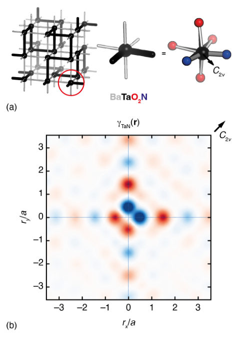
<figcaption class="paper-figure-caption"><b>Fig 1.</b> FIG. 1: (a) The mixed-anion perovskite BaTaO2N forms as a dis- ordered crystal in which O and N atoms (red and blue spheres, re- spectively) decorate the same crystallographic site, subject to a strict local rule that each Ta centre (black sphere) is coordinated by exactly two N atoms and exactly four O atoms.15 Ba atoms are omitted from this representation. The local TaO4N2 coordination environment al- ways adopts a cis geometry, such that each Ta centre experiences a local environment with C2v point symmetry. The Ta–N–Ta linkages decorate the underlying cubic network topology with a labyrinthine motif (thick black sticks). (b) The local anisotropy function γTaN(r) obtained from atomistic...</figcaption>
</figure>
</div>
<p><strong>Summary.</strong> This paper introduces a novel measure, $\gamma_{ij}(r)$, to quantify hidden local structural anisotropy in disordered materials that is missed by standard pair distribution function analyses. By comparing local-coordinate correlations to bulk averages, the authors provide a diagnostic tool that reveals structural information related to local symmetry subgroups. This method is valuable for understanding the structural complexity in materials ranging from liquids to amorphous solids.</p>
<p><strong>Why it may be interesting.</strong> While focused on structural physics, the development of a new, symmetry-constrained correlation function ($\gamma_{ij}(r)$) represents a sophisticated theoretical diagnostic tool for analyzing complex, disordered many-body systems, which has parallels in analyzing entanglement structures in quantum many-body systems.</p>
<details>
<summary>Detailed structure</summary>
<p><strong>Main problem.</strong> The paper aims to quantify hidden local anisotropy in disordered materials, specifically identifying structural correlations that are lost when averaging over the bulk crystal symmetry.</p>
<p><strong>Main result.</strong> A new measure, $\gamma_{ij}(r)$, is introduced which captures local structural correlations that are not accounted for by standard pair distribution functions, vanishing under the operation of the Laue group.</p>
<p><strong>Method.</strong> The method develops an analogy to the 3D-$\Delta$PDF, defining a local anisotropy measure $\gamma_{ij}(r)$ by comparing local-coordinate pair correlations ($ ilde{G}<em ij>{ij}(r)$) to global correlations ($\Delta G</em>(r)$).</p>
<p><strong>Model / system.</strong> The approach is applicable to various disordered systems, including amorphous materials, liquids (like water), and crystalline systems exhibiting local symmetry subgroups (e.g., $C_{2v}$ within $O_h$).</p>
<p><strong>Key observables.</strong> The primary observable is $\gamma_{ij}(r) = \Delta	ilde{G}_{ij}(r) - \Delta G_{ij}(r)$, which quantifies the difference between local and average pairwise vector correlations.</p>
<p><strong>Important parameters / regimes.</strong> The local coordinate system and the specific atomic model used to define the local correlations are crucial inputs.</p>
<p><strong>Assumptions / limitations.</strong> The local-coordinate variants depend entirely on the physicality of the atomistic model used, and $\gamma_{ij}(r)$ encodes higher-order correlations not uniquely determined by two-body scattering measurements.</p>
<p><strong>Figures summary.</strong> Figure 1 illustrates the concept using a mixed-anion perovskite, showing how the local $   ext{TaO}_4  ext{N}_2$ environment adopts $C_{2v}$ symmetry, and depicts the $\gamma_{	ext{TaN}}(r)$ function showing spatial variations that vanish under the Laue symmetry.</p>
<p><strong>Paper structure.</strong> The paper introduces the concept by defining the local anisotropy measure $\gamma_{ij}(r)$ in analogy to the 3D-$\Delta$PDF, derives its properties (e.g., vanishing under Laue group operations), and applies it to model systems to demonstrate its utility in revealing hidden local symmetries.</p>
</details>
<details>
<summary>Abstract</summary>
<p>We introduce a simple correlation function for quantifying hidden local anisotropy in disordered materials. Developed in analogy with the three-dimensional difference pair distribution function (3D-$Δ$PDF), our approach identifies structural correlations that are lost through averaging over bulk symmetry. The same approach might be applied to models of disordered crystals, amorphous materials, and liquids alike.</p>
</details>
<p><sub><a href="#top">↑ back to top</a></sub></p>

<p><a id="paper-2610.36700"></a></p>
<h3 id="ancestor-lifting-of-quasi-cyclic-additive-codes-and-certified-quantum-codes"><a href="http://arxiv.org/abs/2610.36700v1">Ancestor Lifting of Quasi-Cyclic Additive Codes and Certified Quantum Codes</a></h3>
<p><strong>Authors:</strong> Liangdong Lu, Ran Xu, Ruipan Yang, Qiang Fu<br>
<strong>Type:</strong> theory · <strong>Category:</strong> quantum information and computing · <strong>PDF:</strong> <a href="https://arxiv.org/pdf/2610.36700v1">https://arxiv.org/pdf/2610.36700v1</a><br>
<strong>Analysis basis:</strong> full PDF text, analyzed in chunks</p>
<div class="figure-strip-hint">↔ Scroll figures horizontally</div>
<div class="paper-figures-scroll">
<figure class="paper-figure-card">
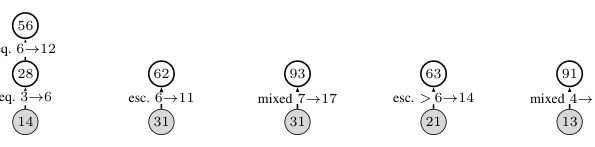
<figcaption class="paper-figure-caption"><b>Fig 1.</b> Fig. 1. Representative divisor-lattice chains for the certified codes. Edge labels give d(C⊥ts m ) →dQ(C). The chains 14 →28 →56 and 31 →62 show equality and a one-unit deviation, respectively; 31 →93 and 13 →91 show mixed branches; 21 →63 shows a deviation of at least seven. The self-dual fold at 13 uses the exact dual distance 4 rather than a quantum distance.</figcaption>
</figure>
<figure class="paper-figure-card">
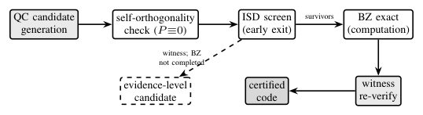
<figcaption class="paper-figure-caption"><b>Fig 2.</b> Fig. 2. Three-stage certification pipeline. Solid path: QC candidate generation →self-orthogonality filter →ISD screening with early exit →exact Brouwer– Zimmermann computation →independent witness re-verification. The output is a certified code; record status is assessed separately against Grassl’s code table. The dashed exit applies only to candidates with explicit witnesses but no completed BZ certificate, which are reported at evidence level only (Remark IX.1).</figcaption>
</figure>
</div>
<p><strong>Summary.</strong> This paper advances the theory of quantum error-correcting codes by analyzing quasi-cyclic additive codes over F4. Using advanced algebraic techniques like ancestor lifting and CRT decomposition, the authors systematically construct and rigorously certify numerous record-breaking binary quantum codes. This work provides a deep link between the number-theoretic structure of the code length and the achievable quantum error-correcting distance.</p>
<p><strong>Why it may be interesting.</strong> The rigorous mathematical techniques developed for analyzing code structure (e.g., divisor-lattice connections) provide deep insights into algebraic coding theory, which underpins quantum information security and computation.</p>
<details>
<summary>Detailed structure</summary>
<p><strong>Main problem.</strong> The paper aims to improve the minimum distances of quantum stabilizer codes by studying self-orthogonal additive codes over F4.</p>
<p><strong>Main result.</strong> The authors certify twenty-one record-breaking binary quantum codes across Grassl's code table, connecting the divisor-lattice structure of quasi-cyclic codes to the exact certification of quantum distances.</p>
<p><strong>Method.</strong> The research employs ancestor-lifting theorems, CRT splitting, and a rigorous three-stage certification pipeline involving ISD screening and Brouwer-Zimmermann computation.</p>
<p><strong>Model / system.</strong> The focus is on quantum stabilizer codes, which are mathematically modeled by 1-generator (1,2)-quasi-cyclic (QC) additive codes over F4 that are self-orthogonal under the trace inner product.</p>
<p><strong>Key observables.</strong> Minimum distance ($d_Q$), symplectic Gram rank ($r$), and the defect symbol $P(x)$.</p>
<p><strong>Important parameters / regimes.</strong> Code parameters $[[n, k, d]]_2$, and the structure of the code length $n$ (e.g., composite lengths $n=\ell m$).</p>
<p><strong>Assumptions / limitations.</strong> The analysis relies on the palindromic criterion for ensuring symplectic self-orthogonality, though this is noted as sufficient but not necessary.</p>
<p><strong>Figures summary.</strong> The notes reference tables listing certified codes (e.g., Table IV) and structured data regarding code candidates and their supports (e.g., TABLE XV).</p>
<p><strong>Paper structure.</strong> The paper builds from establishing the equivalence between quantum codes and self-orthogonal additive codes, developing algebraic tools like ancestor lifting and decomposition theorems, and culminating in the systematic certification of record-breaking code parameters.</p>
</details>
<details>
<summary>Abstract</summary>
<p>Additive codes over $\Ffour$ that are self-orthogonal under the trace inner product correspond to binary quantum stabilizer codes. We study 1-generator $(1,2)$-quasi-cyclic (QC) additive codes and their exact quantum distances. For composite lengths $n=\ell m$, an ancestor-lifting theorem transports dual words of the folded ancestor to the length-$n$ code. A two-layer decomposition for $\ell=2$ and a CRT splitting for odd $\ell$ yield dimension laws and explain equality, escape, and mixed-branch behavior in the certified examples. A palindromic criterion ensures symplectic self-orthogonality, while reversal pairing and a symplectic Gram rank formula describe broader construction families. Exact distances are established by information-set decoding screening, Brouwer--Zimmermann computation on the additive dual, and independent witness verification. We certify twenty-one record-breaking binary quantum codes across twenty entries of Grassl's code table, with twenty-eight certified members in total. Propagation improves thirty-four further entries, and explicit constructions are supplied for three table-tying GV entries marked Code Missing Construction. Six additional candidates are reported only with rigorous upper bounds and heuristic screening evidence. The results connect divisor-lattice structure in additive quasi-cyclic codes with reproducible certification of exact quantum distances.</p>
</details>
<p><sub><a href="#top">↑ back to top</a></sub></p>

<p><a id="paper-2610.36140"></a></p>
<h3 id="anisotropic-structural-and-magnetic-response-in-smmath788mathirmath789mathalmath790math-al-sublattice-reconstruction-upon-sm-substitution"><a href="http://arxiv.org/abs/2610.36140v1">Anisotropic Structural and Magnetic Response in Sm$_2$Ir$_8$Al$_{31}$: Al-Sublattice Reconstruction upon Sm Substitution</a></h3>
<p><strong>Authors:</strong> Mingyu Xu, Weiwei Xie<br>
<strong>Type:</strong> experiment · <strong>Category:</strong> strongly correlated electrons · <strong>PDF:</strong> <a href="https://arxiv.org/pdf/2610.36140v1">https://arxiv.org/pdf/2610.36140v1</a><br>
<strong>Analysis basis:</strong> full PDF text, analyzed in chunks</p>
<div class="figure-strip-hint">↔ Scroll figures horizontally</div>
<div class="paper-figures-scroll">
<figure class="paper-figure-card">
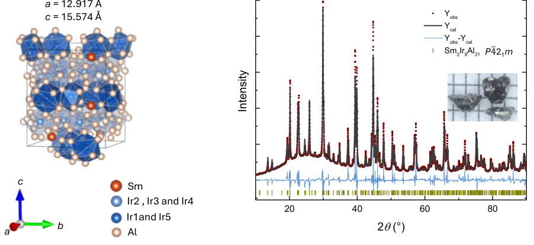
<figcaption class="paper-figure-caption"><b>Fig 1.</b> Fig. 1| Crystalline structure of Sm2Ir8Al31. (a) Crystal structure of Sm2Ir8Al31. (b) Powder X-ray diffraction pattern of Sm2Ir8Al31 and the corresponding Rietveld refinement. The inset shows single crystals on millimeter-grid paper.</figcaption>
</figure>
<figure class="paper-figure-card">
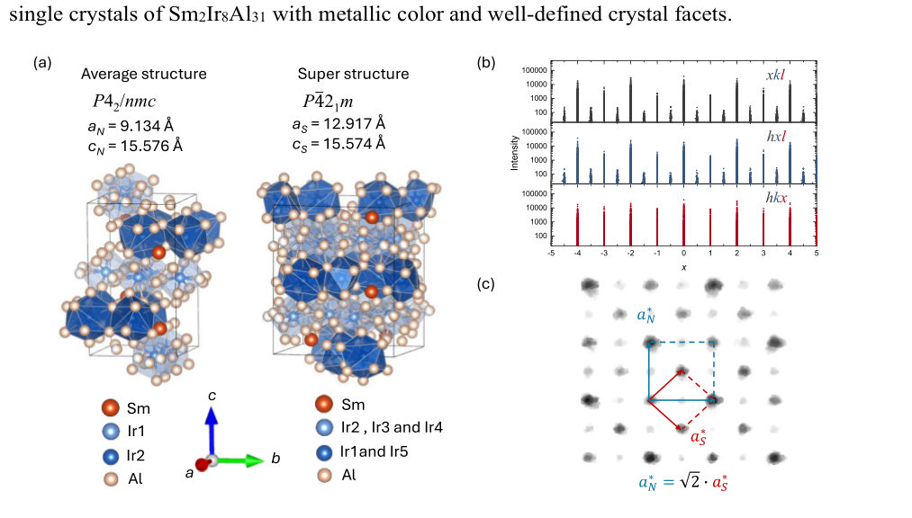
<figcaption class="paper-figure-caption"><b>Fig 2.</b> Fig. 2| Crystalline structure of Sm2Ir8Al31. (a) Crystal structures shown using the average cell and the √2 × √2 × 1 supercell. (b) Reciprocal-space intensity of Sm2Ir8Al31 along the xkl, hxl, and hkx directions. (c) Reciprocal-space intensity map illustrating the relationship between the average-cell and supercell reciprocal lattices. The average structure adopts the same structural framework as UIr4Al15, whereas the superstructure exhibits a (√2 × √2 × 1) enlargement of the unit cell.</figcaption>
</figure>
<figure class="paper-figure-card">
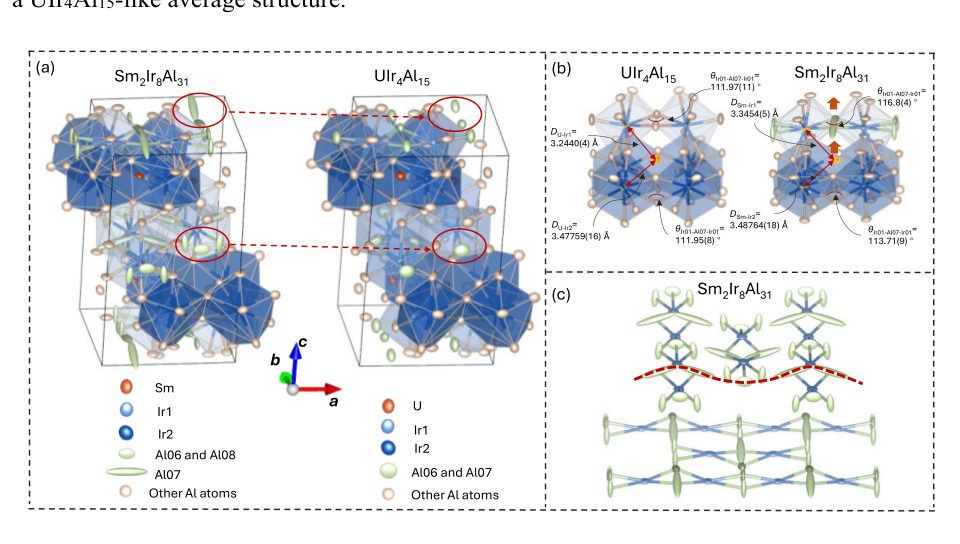
<figcaption class="paper-figure-caption"><b>Fig 3.</b> Fig. 3 | The structure comparison between Sm2Ir8Al31 and UIr4Al15. (a) Comparison of the average structures, highlighting the Al sites with pronounced positional disorder. (b) Local structural distortion around the Sm/U and Ir framework, illustrated by selected interatomic distances and bond angles. (c) Anisotropic displacement and splitting of the Al sublattice in Sm2Ir8Al31.</figcaption>
</figure>
<figure class="paper-figure-card">
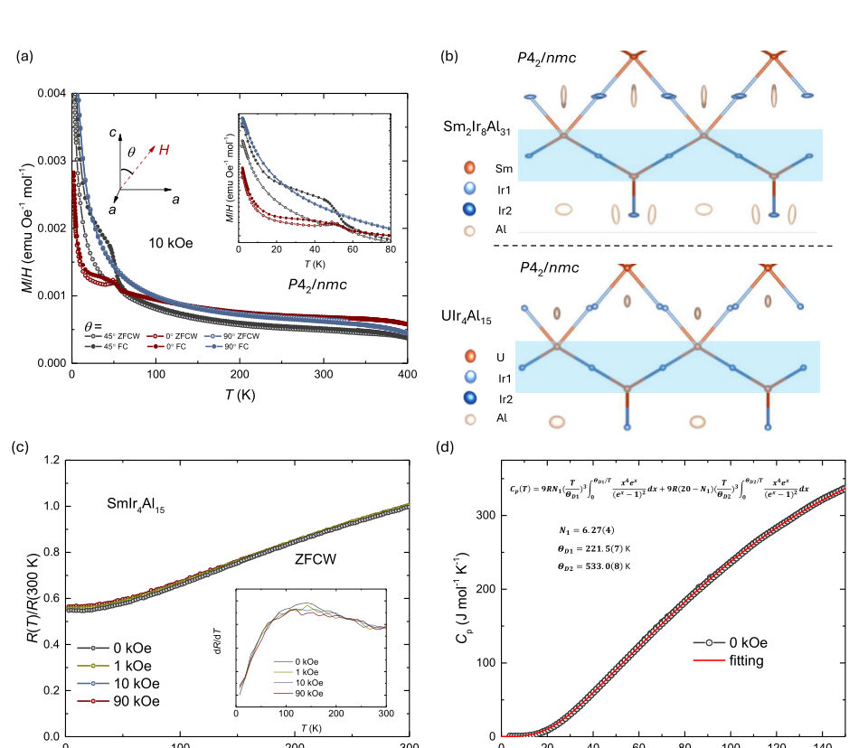
<figcaption class="paper-figure-caption"><b>Fig 4.</b> Fig. 4 | Temperature-dependent properties of Sm2Ir8Al31. (a) magnetic susceptibility measured at 10 kOe for different field orientations under ZFCW and FC conditions; (b) Comparison of the atomic displacement ellipsoids of Sm2Ir8Al31 (top) and UIr4Al15 (bottom), showing different anisotropic atomic displacement patterns; The blue shading highlights the in-plane atomic displacement of the Sm and Ir2 atoms within the ab plane, which show relatively small positional changes upon replacing U with Sm. (c) normalized electrical resistance under different magnetic fields, as shown in the inset; and (d) zero-field heat capacity, with the Debye mode fitting in the inset.</figcaption>
</figure>
</div>
<p><strong>Summary.</strong> This work reports on the synthesis and characterization of $   ext{Sm}<em 31>2   ext{Ir}_8   ext{Al}</em>$, showing that substituting U with Sm induces significant, anisotropic structural reconstruction, especially in the Al sublattice. Magnetically, the material exhibits a distinct, field-dependent anomaly near 50 K, which the authors argue is a magnetic crossover rather than a conventional phase transition, highlighting the strong coupling between structure and magnetism in these compounds.</p>
<p><strong>Why it may be interesting.</strong> The interplay between chemical pressure, structural reconstruction (Al sublattice), and the resulting magnetic anisotropy in f-electron materials is highly relevant to understanding crystal electric field effects and magnetic ordering in correlated systems.</p>
<details>
<summary>Detailed structure</summary>
<p><strong>Main problem.</strong> The study investigates how substituting a U element with a larger Sm element in an intermetallic compound ($  ext{UIr}<em 15>4  ext{Al}</em>$ analog) affects the crystal structure and magnetic properties.</p>
<p><strong>Main result.</strong> The substitution induces a strongly anisotropic structural response, causing the Al sublattice to reconstruct, and results in a magnetic anomaly near 50 K interpreted as a crossover rather than a bulk phase transition.</p>
<p><strong>Method.</strong> The research combines single-crystal X-ray diffraction (SCXRD) to determine structure, magnetic susceptibility measurements ($\chi$) to probe magnetism, and heat capacity measurements ($C_p$) to check for thermodynamic transitions.</p>
<p><strong>Model / system.</strong> The physical system is the intermetallic compound $ ext{Sm}<em 31>2   ext{Ir}_8   ext{Al}</em>}$, which is structurally analogous to $ ext{UIr<em 15>4  ext{Al}</em>$. The investigation focuses on the local environment and electronic interactions influenced by the f-element substitution.</p>
<p><strong>Key observables.</strong> Crystal structure (tetragonal superstructure $Par{4}2_1m$), anisotropic atomic displacement ellipsoids, magnetic susceptibility ($\chi$) showing a broad anomaly near 50 K, and the absence of corresponding heat capacity anomalies.</p>
<p><strong>Important parameters / regimes.</strong> The substitution element (U $   o$ Sm), the temperature of the magnetic anomaly ($\sim 50 	ext{ K}$), and the structural distortion magnitude.</p>
<p><strong>Assumptions / limitations.</strong> The magnetic anomaly at 50 K is interpreted as an anisotropic magnetic crossover rather than a bulk thermodynamic phase transition due to the lack of corresponding signals in $C_p$ or lattice parameters.</p>
<p><strong>Figures summary.</strong> Figures show the crystal structure and PXRD pattern of $   ext{Sm}<em 31>2   ext{Ir}_8   ext{Al}</em>$; supplementary figures detail lattice parameters, temperature dependence, and structural refinement data.</p>
<p><strong>Paper structure.</strong> The paper proceeds by synthesizing and characterizing the structure of $   ext{Sm}<em 31>2   ext{Ir}_8   ext{Al}</em>}$ via SCXRD, comparing its structural response to the parent compound $ ext{UIr<em 15>4  ext{Al}</em>$. It then analyzes the resulting structural distortions, particularly in the Al sublattice, before presenting magnetic susceptibility data to characterize the magnetic ground state.</p>
</details>
<details>
<summary>Abstract</summary>
<p>Chemical pressure plays a critical role in determining the crystal structures and physical properties of intermetallic compounds. Here, we report the synthesis, crystal structure, and physical properties of Sm$_2$Ir$_8$Al$_{31}$, a structural analog of UIr$_4$Al$_{15}$, in which the smaller 5f uranium atoms are replaced by larger 4f samarium atoms. Single-crystal X-ray diffraction reveals a tetragonal $\sqrt{2}\times\sqrt{2}\times1$ superstructure with space group $P\bar{4}2_1m$, derived from a UIr$_4$Al$_{15}$-like average structure with space group $P4_2/nmc$. Comparison with UIr$_4$Al$_{15}$ shows that chemical pressure from U-to-Sm substitution produces a strongly anisotropic structural response rather than a uniform expansion of the Ir-Al framework. While one Ir coordination environment undergoes only modest changes, the other exhibits substantial local rearrangement. The Al sublattice primarily accommodates these structural distortions, with selected Al sites showing positional splitting, anisotropic atomic displacement ellipsoids, and partial occupancies, resulting in an Al-rich composition of approximately Sm$_2$Ir$_8$Al$_{31}$. Magnetic susceptibility measurements reveal a direction dependence, including a broad anomaly near 50 K for selected magnetic-field orientations. However, the absence of corresponding anomalies in heat capacity, electrical resistivity, and lattice parameters suggests that this feature is more consistent with an anisotropic magnetic crossover than a bulk thermodynamic phase transition. These results highlight how chemical substitution at the f-element site can induce Al-sublattice reconstruction and modify the magnetic response within a closely related Ir-Al structural framework.</p>
</details>
<p><sub><a href="#top">↑ back to top</a></sub></p>

<p><a id="paper-2610.37635"></a></p>
<h3 id="classical-verification-of-quantum-computation-beyond-the-polynomial-hierarchy"><a href="http://arxiv.org/abs/2610.37635v1">Classical Verification of Quantum Computation Beyond the Polynomial Hierarchy</a></h3>
<p><strong>Authors:</strong> Atul Mantri<br>
<strong>Type:</strong> theory · <strong>Category:</strong> quantum information and computing · <strong>PDF:</strong> <a href="https://arxiv.org/pdf/2610.37635v1">https://arxiv.org/pdf/2610.37635v1</a><br>
<strong>Analysis basis:</strong> full PDF text, analyzed in chunks</p>
<div class="figure-strip-hint">↔ Scroll figures horizontally</div>
<div class="paper-figures-scroll">
<figure class="paper-figure-card">
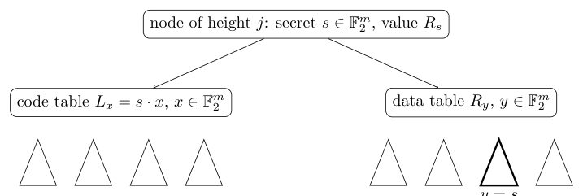
<figcaption class="paper-figure-caption"><b>Fig 1.</b> Figure 1: A node of the recursion with the Hadamard code. The node hides a secret s. Its code table is the codeword of s, and its value is the entry of its data table at s (the thick subtree). Every entry of both tables is the value of a smaller node, and only the leaves of the recursion are stored in the oracle.</figcaption>
</figure>
</div>
<p><strong>Summary.</strong> This paper tackles the complexity of verifying quantum computations classically, proving that for certain languages, the required verification power exceeds the Polynomial Hierarchy. The authors achieve this by constructing a specific language and deriving strong lower bounds on the communication complexity of any potential verifier protocol. This result deepens our understanding of the separation between quantum and classical computational power.</p>
<p><strong>Why it may be interesting.</strong> This work establishes fundamental computational barriers for verifying quantum processes using classical resources, which impacts the theoretical understanding of quantum complexity classes.</p>
<details>
<summary>Detailed structure</summary>
<p><strong>Main problem.</strong> Determining if a classical polynomial-time verifier can verify arbitrary polynomial-time quantum computations without relying on computational assumptions.</p>
<p><strong>Main result.</strong> The authors show that, relative to a classical oracle, verification is possible for a language beyond the polynomial hierarchy ($  ext{EQPO} 
ot\subseteq     ext{PHO}$).</p>
<p><strong>Method.</strong> The proof constructs a language based on recursive Fourier sampling and proves a novel 'switching theorem' for correlated inputs, leading to lower bounds on the required communication complexity.</p>
<p><strong>Model / system.</strong> The model involves classical verification of quantum computation using an oracle, structured around recursive code and data tables, and analyzed via interactive proof systems.</p>
<p><strong>Key observables.</strong> The number of messages and oracle queries required by the verification protocol.</p>
<p><strong>Important parameters / regimes.</strong> The height function $h(n)$ controlling the recursion depth, and the polynomial hierarchy levels ($ ext{PHO}$).</p>
<p><strong>Assumptions / limitations.</strong> The result is conditional on the existence of a classical oracle, and the proof relies on specific structural properties of the recursive sampling process.</p>
<p><strong>Paper structure.</strong> The paper establishes the separation $ ext{EQPO} 
ot\subseteq     ext{PHO}$ relative to an oracle by constructing a language and proving lower bounds on the communication complexity required for its interactive proof system.</p>
</details>
<details>
<summary>Abstract</summary>
<p>It is not known whether a classical polynomial-time verifier can verify arbitrary polynomial-time quantum computations with an efficient quantum honest prover without computational assumptions. We show that, relative to a classical oracle, such verification is possible for a language beyond the polynomial hierarchy that is decided exactly in quantum polynomial time. The protocol is public-coin, with perfect completeness and soundness error at most 1/4. To our knowledge, no language with such a proof system was previously proved to lie outside AM relative to an oracle.   For every unbounded polynomial-time computable function, the oracle can be chosen so that the message count and the oracle query counts of the quantum algorithm, verifier, and honest prover are bounded by this function of the input length. The message count is optimal up to a constant factor, since for a suitable oracle every interactive proof system for the language uses at least a constant fraction of the messages of our protocol on infinitely many lengths, with a constant depending on its verifier.   The language is a variant of recursive Fourier sampling in which code tables encode secrets that address data tables. The tables are evaluated recursively, and the oracle stores only the leaves. The quantum algorithm recovers every secret exactly, and the verifier checks the prover's secrets recursively against random code entries. The recursion restricts the input in a correlated way, as the same secret fixes the code bits and chooses the free coordinate, so Håstad's switching lemma does not apply. We prove a switching theorem for these restrictions, which may be of independent interest. For instances of sufficient height, no constant-depth circuit of size $2^{\mathrm{poly}(n)}$ changes its output with probability above $2^{-Ω(n)}$ when the answer of a random instance is flipped by changing a single leaf.</p>
</details>
<p><sub><a href="#top">↑ back to top</a></sub></p>

<p><a id="paper-2610.36115"></a></p>
<h3 id="coulomb-and-exchange-driven-redistribution-of-spectral-correlations"><a href="http://arxiv.org/abs/2610.36115v1">Coulomb- and exchange-driven redistribution of spectral correlations</a></h3>
<p><strong>Authors:</strong> Zanya Gonzalez Tellez, Miguel Angel Ocaña Bribiesca<br>
<strong>Type:</strong> theory · <strong>Category:</strong> strongly correlated electrons · <strong>PDF:</strong> <a href="https://arxiv.org/pdf/2610.36115v1">https://arxiv.org/pdf/2610.36115v1</a><br>
<strong>Analysis basis:</strong> full PDF text, analyzed in chunks</p>
<div class="figure-strip-hint">↔ Scroll figures horizontally</div>
<div class="paper-figures-scroll">
<figure class="paper-figure-card">
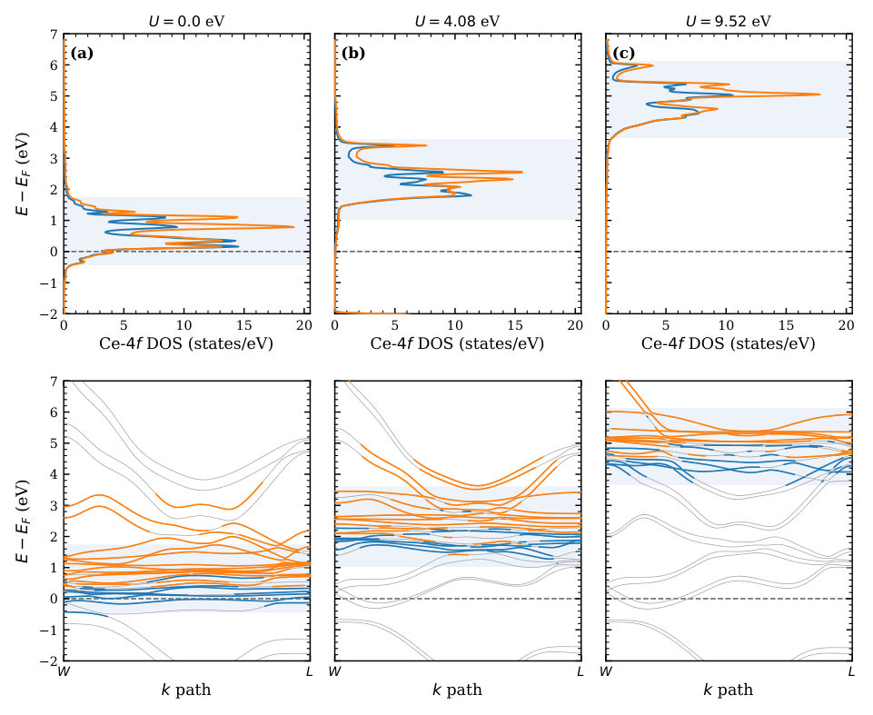
<figcaption class="paper-figure-caption"><b>Fig 1.</b> Figure 1: Evolution of the electronic structure along the U cut (J = 0.0 eV). The upper panels display the total j-projected Ce-4f partial densities of states (pDOS) for (a) U = 0.0, (b) 4.08, and (c) 9.52 eV, with blue and orange lines representing the j = 5/2 and j = 7/2 components, respectively. The lower panels show the corresponding electronic band structures along the W →L path, where colored segments highlight states matching the dominant relativistic character. The shaded region marks the DOS-selected upper Ce-4f manifold used in the spectral statistical analysis.</figcaption>
</figure>
<figure class="paper-figure-card">
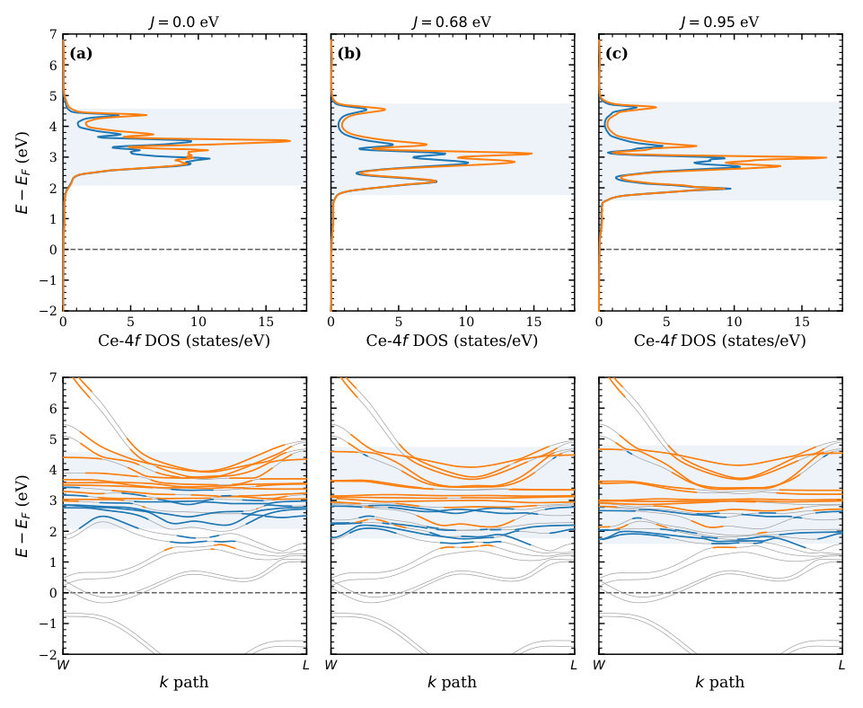
<figcaption class="paper-figure-caption"><b>Fig 2.</b> Figure 2: Evolution of the electronic structure along the J cut at fixed U = 6.12 eV. The upper panels show the total j-projected Ce-4f partial densities of states (pDOS) for (a) J = 0.0, (b) 0.68, and (c) 0.95 eV, with blue and orange lines denoting the j = 5/2 and j = 7/2 components, respectively. The lower panels show the corresponding electronic band structures along the W →L path, with colored segments identifying states matching the dominant relativistic character. The shaded region marks the DOS-selected high-energy Ce-4f manifold used in the spectral statistical analysis.</figcaption>
</figure>
<figure class="paper-figure-card">
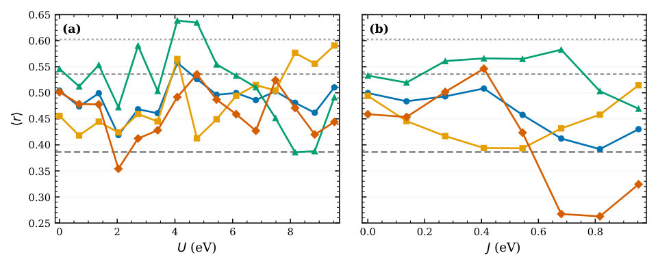
<figcaption class="paper-figure-caption"><b>Fig 3.</b> Figure 3: Energy-resolved evolution of the mean reduced spacing ratio ⟨r⟩as a function of (a) Hubbard U (at J = 0.0 eV) and (b) exchange parameter J (at fixed U = 6.12 eV) for the different DOS-selected Ce-4f subwindows. Horizontal dashed lines represent the analytical Poisson, GOE, and GUE random matrix reference values.</figcaption>
</figure>
<figure class="paper-figure-card">
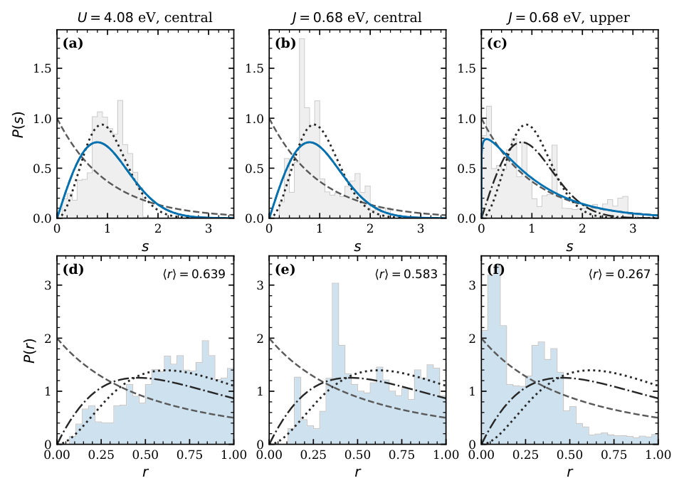
<figcaption class="paper-figure-caption"><b>Fig 4.</b> Figure 4: Representative nearest-neighbor spacing distributions P(s) (upper panels) and reduced spacing-ratio distributions P(r) (lower panels) for selected spectral regions of the Ce-4f manifold. The columns correspond to the central window at U = 4.08 eV (J = 0.0 eV), and the central and upper windows at U = 6.12 eV and J = 0.68 eV, respectively. Analytical RMT reference distributions (Poisson, GOE, and GUE) are shown alongside the corresponding Brody fits and mean reduced spacing ratios ⟨r⟩.</figcaption>
</figure>
<figure class="paper-figure-card">
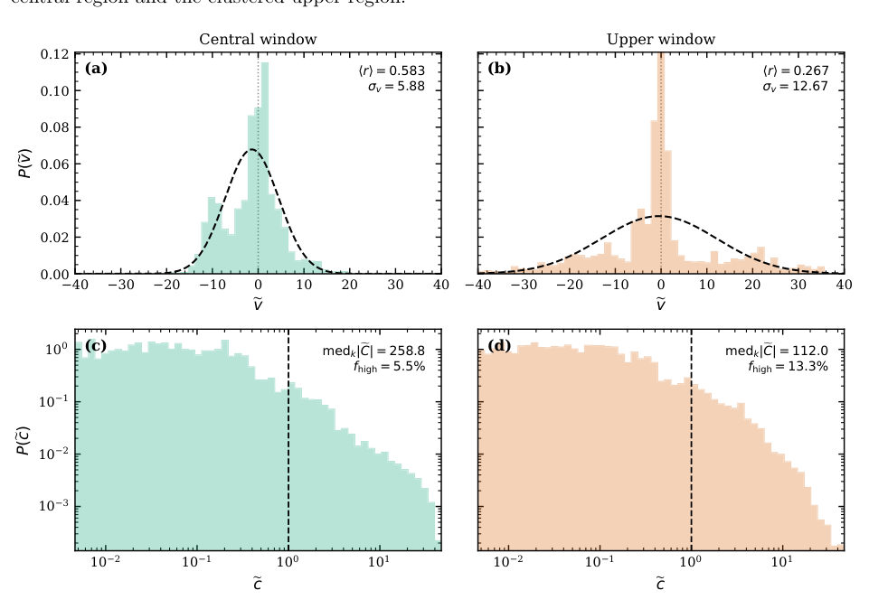
<figcaption class="paper-figure-caption"><b>Fig 5.</b> Figure 5: Comparison of the band dynamics in the central (left panels) and upper (right panels) regions of the Ce-4f manifold at U = 6.12 eV and J = 0.68 eV. The signed scaled-velocity distributions P(˜v) (upper panels) characterize the local band slopes, while the normalized curvature- magnitude distributions P(˜c) (lower panels) display the typical curvature scale and the high-curvature tails.</figcaption>
</figure>
</div>
<p><strong>Summary.</strong> This theoretical study uses advanced spectral statistics on DFT+U+SOC calculations for $\gamma$-Ce to disentangle the effects of Coulomb (U) and exchange (J) interactions on the electronic spectrum. It finds that the spectral reorganization is highly sensitive to whether U or J is varied independently, demonstrating that the two interactions contribute distinct, non-additive effects on the $4f$ manifold's spectral correlations.</p>
<p><strong>Why it may be interesting.</strong> The detailed spectral analysis provides a highly sensitive probe into the nature of electronic correlations, revealing internal structure (like exchange-driven clustering) that is masked by standard, integrated observables.</p>
<details>
<summary>Detailed structure</summary>
<p><strong>Main problem.</strong> To investigate how the Coulomb (U) and exchange (J) components of local electronic interactions separately reorganize the collective structure of the electronic spectrum in $\gamma$-Ce.</p>
<p><strong>Main result.</strong> The spectral response depends on the separate Coulomb and exchange interactions, as the exchange interaction causes a distinct clustering effect not captured by a single effective U-J parameter.</p>
<p><strong>Method.</strong> First-principles DFT+U+SOC calculations are combined with Random Matrix Theory (RMT) spectral statistics applied to energy- and character-resolved spectral windows.</p>
<p><strong>Model / system.</strong> The study focuses on the Ce-4f manifold in $\gamma$-Ce, modeled using the DFT+U+SOC formalism to treat local electronic correlations.</p>
<p><strong>Key observables.</strong> Nearest-neighbor spacings, reduced spacing ratios, band velocities, band curvatures, and spectral statistics ($\langle r 
angle$, $eta_B$).</p>
<p><strong>Important parameters / regimes.</strong> The interaction parameters U and J are varied independently, and the analysis is performed on energy-resolved subwindows and $j=5/2$ and $j=7/2$ components.</p>
<p><strong>Assumptions / limitations.</strong> The analysis uses a static spin-polarized DFT+U+SOC description, and RMT ensembles are used only as statistical references.</p>
<p><strong>Figures summary.</strong> Figures compare spectral statistics (velocity/curvature distributions) across different energy windows and relativistic character ($j=5/2$ vs $j=7/2$), showing distinct behaviors for U-driven migration and J-driven coexistence.</p>
<p><strong>Paper structure.</strong> The paper systematically analyzes spectral statistics by varying U (fixing J) and varying J (fixing U), comparing the results to show that the separate roles of U and J are crucial and cannot be reduced to a single effective interaction.</p>
</details>
<details>
<summary>Abstract</summary>
<p>Electronic correlations reorganize not only the energies of individual electronic states but also the collective structure of the spectrum. Here, first-principles density functional theory calculations combined with random-matrix spectral statistics are used to examine this reorganization in gamma-Ce within a static spin-polarized DFT+U+SOC description. We distinguish the effects of the Coulomb interaction U from those of the exchange interaction J by analyzing nearest-neighbor spacings, reduced spacing ratios, band velocities, and band curvatures across the Ce-4f manifold. Increasing U does not produce a monotonic transition between Poisson- and Wigner-Dyson-like statistics; instead, the region of strongest level repulsion migrates across the 4f manifold as the interaction increases. Exchange produces a qualitatively different response. At fixed U, strongly repulsive and strongly clustered spectral regions coexist within the same 4f manifold even while the total spin moment and 4f occupation remain nearly unchanged. The clustering persists after resolving the spectrum into its dominant j = 5/2 and j = 7/2 components and differs strongly between calculations having the same numerical value of U-J. Within the present DFT+U+SOC description, the spectral response therefore depends on the separate Coulomb and exchange interactions and cannot be represented completely by a single effective U-J parameter. These results show that energy- and character-resolved spectral statistics expose correlation-driven electronic reorganization that is hidden by conventional integrated observables.</p>
</details>
<p><sub><a href="#top">↑ back to top</a></sub></p>

<p><a id="paper-2610.36597"></a></p>
<h3 id="effective-noise-thresholds-for-reliable-quantum-approximation-optimisation-algorithm-under-noisy-environment"><a href="http://arxiv.org/abs/2610.36597v1">Effective Noise Thresholds for Reliable Quantum Approximation Optimisation Algorithm under Noisy Environment</a></h3>
<p><strong>Authors:</strong> Yozef Tjandra, Hendrik Santoso Sugiarto, Celine Vania Setiadi, Joanna Gracia Tan, Andriyan Bayu Suksmono<br>
<strong>Type:</strong> both · <strong>Category:</strong> quantum information and computing · <strong>PDF:</strong> <a href="https://arxiv.org/pdf/2610.36597v1">https://arxiv.org/pdf/2610.36597v1</a><br>
<strong>Analysis basis:</strong> full PDF text, analyzed in chunks</p>
<div class="figure-strip-hint">↔ Scroll figures horizontally</div>
<div class="paper-figures-scroll">
<figure class="paper-figure-card">
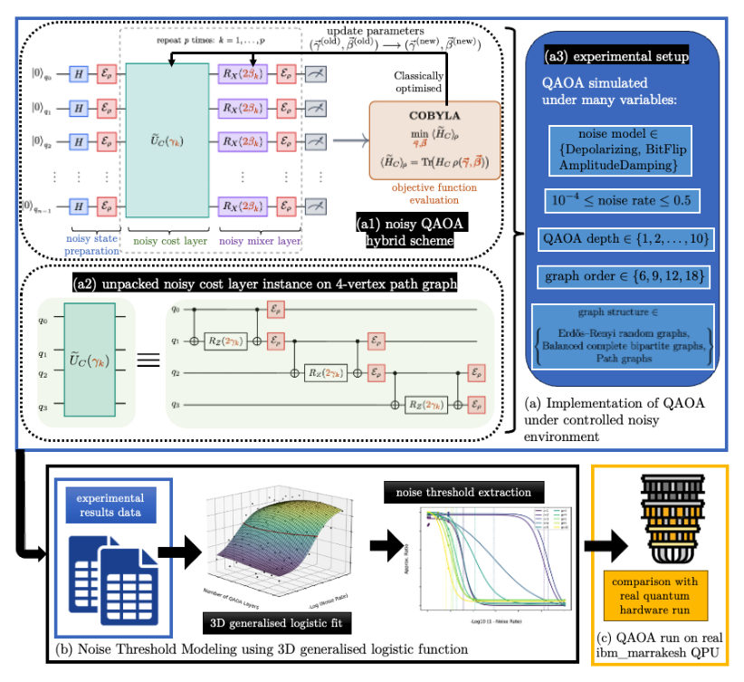
<figcaption class="paper-figure-caption"><b>Fig 1.</b> Figure 1. Overview of the noisy QAOA workflow and analysis pipeline used in this study. (a) Implementation overview of simulated QAOA under controlled noise. (a1) The generic scheme of the hybrid quantum-classical noisy QAOA: noisy state preparation is followed by p repetitions of the noisy cost and mixer layers, with the noise channel Eρ applied after each gate; measurement outcomes are used to evaluate the objective function ⟨˜HC⟩ρ which is minimised over the variational parameters (⃗γ,⃗β) using the COBYLA classical optimiser. (a2) Example decomposition of the noisy cost layer ˜UC(γk) into its constituent two-qubit entangling gates and associated noise channels, illustrated for a...</figcaption>
</figure>
<figure class="paper-figure-card">
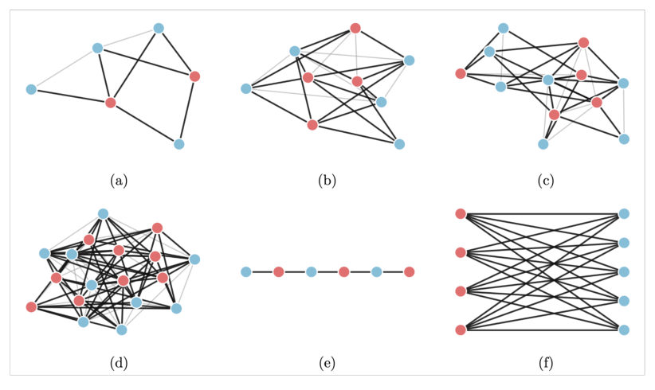
<figcaption class="paper-figure-caption"><b>Fig 2.</b> Figure 2. Representative graph instances used for QAOA benchmarking. Node colours indicate a sample of optimal MaxCut bipartition solution. Bold edges denote cut edges in the optimal solution, whilst grey edges are intra-partition edges. Instances of Erd˝os–Rényi random graphs with (a) 6 nodes, (b) 9 nodes, (c) 12 nodes, and (d) 18 nodes. (e) a representative of the path graph family with 6 nodes. (f) a representative of the complete balanced bipartite graph family K4,5 with 9 nodes.</figcaption>
</figure>
<figure class="paper-figure-card">
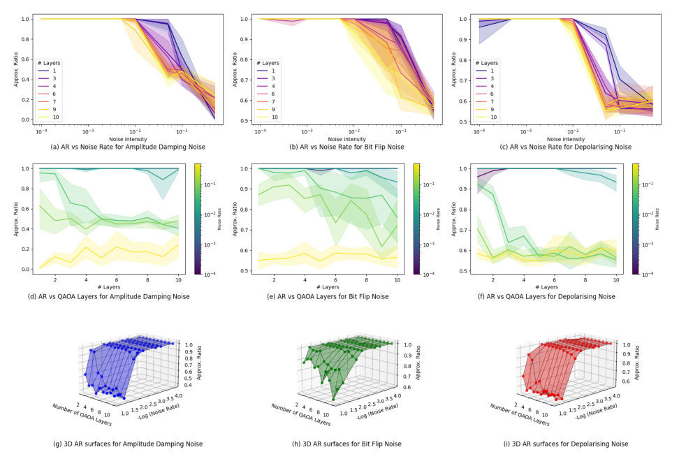
<figcaption class="paper-figure-caption"><b>Fig 3.</b> Figure 3. QAOA approximation ratio (AR) under controlled noise for the 18-vertex complete bipartite graph K9,9, across various QAOA depths, noise rates and noise channel types. (a–c) AR as a function of noise intensity (log scale) for the amplitude damping, bit-flip and depolarising channels respectively; shown for various QAOA depths. (d–f) The corresponding AR as a function of QAOA depth, coloured by noise rate, for the same three channels. (g–i) 3D surfaces visualising the AR as a function of QAOA depth and −log(noise rate), exposing the joint dependence appearing in (a–f).</figcaption>
</figure>
<figure class="paper-figure-card">
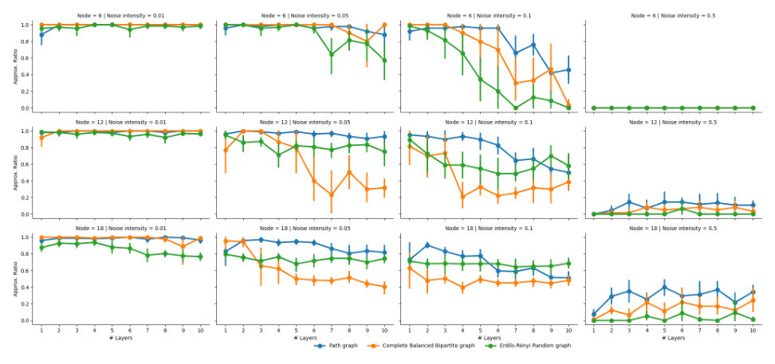
<figcaption class="paper-figure-caption"><b>Fig 4.</b> Figure 4. The evolution of QAOA approximation ratio (AR) with respect to circuit depth under the amplitude damping noise channel, compared across graph structure and graph order. Rows correspond to graph order (n = 6,12,18 vertices) and columns correspond to noise intensity (r = 0.01,0.05,0.1,0.5). Coloured curves show path graphs (blue), complete balanced bipartite graphs (orange) and Erd˝os–Rényi random graphs (green); error bars denote the standard deviation across independent runs.</figcaption>
</figure>
<figure class="paper-figure-card">
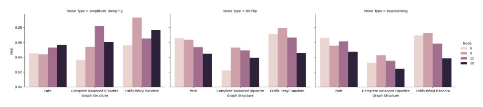
<figcaption class="paper-figure-caption"><b>Fig 5.</b> Figure 5. Accuracy of the fitted generalised logistic surface measured using the mean absolute error (MAE) across graph structures, graph orders and noise channels.</figcaption>
</figure>
</div>
<p><strong>Summary.</strong> This work analyzes the noise resilience of the QAOA algorithm by calculating an 'effective noise threshold' for various circuit depths. By inverting the typical analysis, the authors show that deeper circuits require significantly lower noise levels to maintain reliable performance. This provides a critical diagnostic tool for benchmarking NISQ hardware for optimization problems.</p>
<p><strong>Why it may be interesting.</strong> It provides a quantitative, depth-dependent metric ($r_\star(p)$) for assessing the practical limits of variational quantum algorithms on noisy hardware, which is crucial for designing fault-tolerant quantum algorithms.</p>
<details>
<summary>Detailed structure</summary>
<p><strong>Main problem.</strong> The paper addresses the inverse problem for QAOA: determining the maximum noise level a given circuit depth can tolerate, rather than finding the optimal depth for a fixed noise.</p>
<p><strong>Main result.</strong> The effective noise threshold, $r_\star(p)$, generally decreases as the QAOA depth ($p$) increases, defining critical regimes for reliable quantum computation.</p>
<p><strong>Method.</strong> The authors simulate noisy QAOA circuits using GPU acceleration and fit the resulting approximation ratios to a generalized logistic surface to extract the inflection point, which defines the threshold.</p>
<p><strong>Model / system.</strong> The model uses the QAOA algorithm applied to the MaxCut problem on various graph families. Noise is incorporated via multiple channels (depolarizing, bit-flip, amplitude damping) acting on the quantum state evolution.</p>
<p><strong>Key observables.</strong> Approximation Ratio (AR), Effective Noise Threshold ($r_\star(p)$), and the noise rate ($r$).</p>
<p><strong>Important parameters / regimes.</strong> QAOA Depth ($p \in [1, 10]$), Noise Rate ($r$), and specific graph structures (ER, Path, Bipartite).</p>
<p><strong>Assumptions / limitations.</strong> The model assumes the noise can be characterized by fitting the AR to a generalized logistic function; hardware results are noted to understate the true noise due to modeling limitations.</p>
<p><strong>Figures summary.</strong> Figure 1 illustrates the noisy QAOA workflow and the 3D fitting of the noise threshold using a generalized logistic surface. Other figures show representative graph instances.</p>
<p><strong>Paper structure.</strong> The paper first establishes the noisy QAOA framework, then develops the methodology by fitting the AR vs. noise rate/depth to a logistic function to extract the noise threshold. Finally, it analyzes the implications of this threshold across different depth regimes and tests the model on hardware.</p>
</details>
<details>
<summary>Abstract</summary>
<p>Variational quantum algorithms are leading candidates for practical utilisation on noisy intermediate-scale quantum (NISQ) processors, but accumulating noise bounds the usefulness of circuit depths. For the quantum approximate optimisation algorithm (QAOA), this trade-off has mostly been addressed by searching for the best depth for a given device. In this work, we consider the inverse question: how much noise each depth can tolerate. Using GPU-accelerated noisy QAOA simulations for MaxCut on three graph families with 6 to 18 vertices, depths up to 10 and three noise channels, we fit the approximation ratios with a generalised logistic surface. We propose the effective noise threshold as the inflection boundary of the logistic surfaces, a noise boundary separating reliable and unreliable QAOA approximation regimes. In general, the threshold decreases as depth rises, indicating that deeper circuits demand for stricter noise requirement for reliable approximation. Its best and worst values over depth divide the noise axis into three regions: every depth remains effective, depth must be chosen with care, or no depth induces effective optimisation. Assessing on the ibm_marrakesh processor, although modelled gate errors understate factual noise, the threshold modeling remains beneficial in informing qualitative depth-dependence structure and identifying dominating noise channel in noisy QAOA.</p>
</details>
<p><sub><a href="#top">↑ back to top</a></sub></p>

<p><a id="paper-2610.36070"></a></p>
<h3 id="equilibrium-learning-of-quantum-circuits"><a href="http://arxiv.org/abs/2610.36070v1">Equilibrium Learning of Quantum Circuits</a></h3>
<p><strong>Authors:</strong> Frank Barrows, Touheed Atif, Yiğit Subaşı, Tyler Volkoff<br>
<strong>Type:</strong> theory · <strong>Category:</strong> quantum information and computing · <strong>PDF:</strong> <a href="https://arxiv.org/pdf/2610.36070v1">https://arxiv.org/pdf/2610.36070v1</a><br>
<strong>Analysis basis:</strong> full PDF text, analyzed in chunks</p>
<div class="figure-strip-hint">↔ Scroll figures horizontally</div>
<div class="paper-figures-scroll">
<figure class="paper-figure-card">
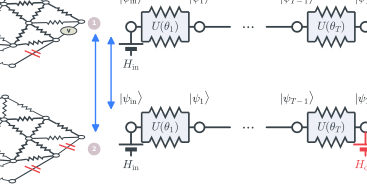
<figcaption class="paper-figure-caption"><b>Fig 1.</b> FIG. 1. Schematic of equilibrium learning in resistor networks and FK clock networks. (a) A resistor network relaxes to a free equilibrium under input boundary conditions (1); clamping the outputs toward their targets defines a second equilibrium (2), and the contrast between the two provides local gradient information for the trainable conductances. (b) FK analogue: the clock network of a parametrized circuit with input term 𝐻in has the history state as its free equilibrium (1); adding the output clamp 𝐻out defines the clamped equilibrium (2) used for training.</figcaption>
</figure>
<figure class="paper-figure-card">
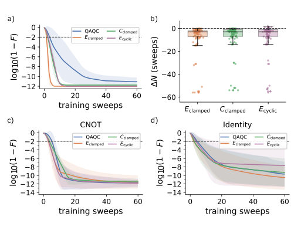
<figcaption class="paper-figure-caption"><b>Fig 2.</b> FIG. 2. (a,b) Random-generator identity compiling: (a) geometric- mean infidelity 1 −𝐹over paired initializations, (b) paired sweep differences Δ𝑁relative to tuned QAQC, with Δ𝑁&lt; 0 indicating convergence in fewer sweeps. (c,d) Geometric-mean infidelity for unitary compiling: 𝑉= CNOT12 (c) and 𝑉= 𝐼(d).</figcaption>
</figure>
<figure class="paper-figure-card">
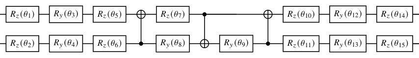
<figcaption class="paper-figure-caption"><b>Fig 3.</b> FIG. 3. Two-qubit trainable block 𝑈2(𝜃). This same block is used as the active circuit in the Bell state preparation, and unitary compiling benchmarks.</figcaption>
</figure>
<figure class="paper-figure-card">
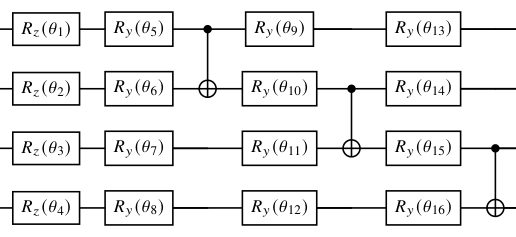
<figcaption class="paper-figure-caption"><b>Fig 4.</b> FIG. 4. Four-qubit GHZ-state preparation ansatz. This is a state-preparation benchmark on four active qubits, not a universal four-qubit unitary compilation ansatz.</figcaption>
</figure>
<figure class="paper-figure-card">
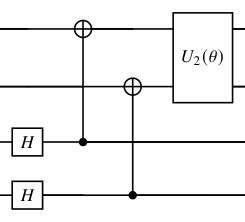
<figcaption class="paper-figure-caption"><b>Fig 5.</b> FIG. 5. Unitary compiling benchmark circuit in the implementation ordering 𝐴1, 𝐴2, 𝑅1, 𝑅2. The Bell-pair preparation produces |Ω⟩𝐴𝑅, after which the trainable two-qubit circuit acts only on the active register 𝐴. Replacing 𝑈2(𝜃) by 𝑉gives the target state.</figcaption>
</figure>
</div>
<p><strong>Summary.</strong> This paper adapts the concept of equilibrium learning, typically used in electrical circuits, to optimize quantum circuits by formulating the problem using auxiliary Hamiltonians. It derives novel cost functions based on ground state properties and demonstrates that optimizing using these equilibrium observables leads to faster convergence rates compared to standard infidelity metrics during quantum circuit compilation.</p>
<p><strong>Why it may be interesting.</strong> This work provides a powerful, physics-inspired framework (equilibrium principles) to optimize quantum circuits, which is highly relevant for developing robust quantum compilation techniques and understanding optimization landscapes in quantum computation.</p>
<details>
<summary>Detailed structure</summary>
<p><strong>Main problem.</strong> The paper extends the principle of equilibrium learning, traditionally used in classical circuits, to train and compile parameterized quantum circuits.</p>
<p><strong>Main result.</strong> Equilibrium cost functions derived from ground state energies and overlaps reshape the optimization landscape, leading to convergence in fewer sweeps than standard compilation infidelity cost functions in two-qubit benchmarks.</p>
<p><strong>Method.</strong> The authors formulate the quantum compilation problem using Hamiltonians (clamped or cyclic) derived from the Feynman-Kitaev model, defining cost functions via ground state energy minimization or overlap calculation, which are then optimized using quantum estimation techniques.</p>
<p><strong>Model / system.</strong> The model involves mapping a gate-based quantum circuit onto a Hamiltonian on a composite Hilbert space ($\mathcal{H}_C \otimes \mathcal{H}_S$) incorporating a clock register. The training process minimizes the energy or overlap between the system's ground state and a 'free history state'.</p>
<p><strong>Key observables.</strong> Ground state energies ($E_{	ext{clamped}}, E_{	ext{cyclic}}$), Overlap functions ($C_{	ext{clamped}}, C_{	ext{cyclic}}$), and the compilation infidelity ($\epsilon$).</p>
<p><strong>Important parameters / regimes.</strong> The coupling strengths ($J_{in}, J_{prop}, J_{out}, J_{cyc}$), the compilation error ($\epsilon$), and the number of sweeps required for convergence.</p>
<p><strong>Assumptions / limitations.</strong> The comparison with standard QAQC does not account for the quantum resources required per sweep, and specific domain constraints are needed for the history state to reside in the lowest-energy subspace.</p>
<p><strong>Figures summary.</strong> Figures schematically illustrate the equilibrium learning process for both resistor networks and the quantum circuit analogue, showing the free and clamped equilibria.</p>
<p><strong>Paper structure.</strong> The paper first introduces the theoretical framework by mapping classical equilibrium learning to quantum circuits via Hamiltonians. It then derives explicit formulas for energy and overlap cost functions based on the compilation error $\epsilon$. Finally, it benchmarks these methods against standard QAQC on various state preparation and identity compiling tasks, demonstrating superior convergence speed.</p>
</details>
<details>
<summary>Abstract</summary>
<p>Equilibrium learning trains a physical system using observables of its relaxed states. We extend this principle to gate-based quantum circuits by embedding a parametrized circuit in a Feynman-Kitaev (FK) Hamiltonian and imposing the compilation target either through an output clamping term or through a target-dependent cyclic condition on the clock register. The ground state energies and the overlaps of the corresponding ground states with the free history state define faithful cost functions for unitary and state compilation. We show that these costs are nonlinear functions of the compilation infidelity and therefore reshape the optimization landscape. We show that starting from the free history state, quantum phase estimation can prepare the relevant ground states and estimate the cost functions with polynomial resources. In two-qubit benchmarks, optimization with the equilibrium cost functions reaches a fixed fidelity threshold in fewer sweeps than standard compilation infidelity cost function for many instances. The results demonstrate the potential for encoding quantum learning problems as computation of equilibrium observables.</p>
</details>
<p><sub><a href="#top">↑ back to top</a></sub></p>

<p><a id="paper-2610.36697"></a></p>
<h3 id="ground-state-properties-of-a-lattice-coupled-strongly-correlated-model-for-solid-oxygen-under-pressure"><a href="http://arxiv.org/abs/2610.36697v1">Ground-State Properties of a Lattice-Coupled Strongly Correlated Model for Solid Oxygen under Pressure</a></h3>
<p><strong>Authors:</strong> Naomichi Sato, Makoto Naka, Joji Nasu<br>
<strong>Type:</strong> theory · <strong>Category:</strong> strongly correlated electrons · <strong>PDF:</strong> <a href="https://arxiv.org/pdf/2610.36697v1">https://arxiv.org/pdf/2610.36697v1</a><br>
<strong>Analysis basis:</strong> full PDF text, analyzed in chunks</p>
<div class="figure-strip-hint">↔ Scroll figures horizontally</div>
<div class="paper-figures-scroll">
<figure class="paper-figure-card">
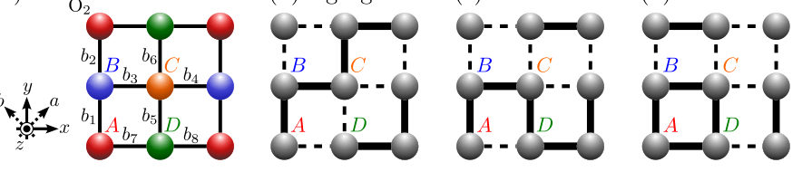
<figcaption class="paper-figure-caption"><b>Fig 1.</b> Fig. 1. (a) Two-dimensional square lattice representing the molecular arrangement in the ab plane of solid oxygen. Each site represents an O2 molecule. The four sublattices A, B, C, and D, the eight nearest- neighbor bond types b1, . . . , b8, and the coordinate axes are indicated. (b) Zigzag, (c) meander, and (d) tetramer distortion patterns whose relative stability is examined in this study. Solid and dashed lines denote bond modulations +δ/2 and −δ/2, respectively. With the components ordered according to b1, . . . , b8, the corresponding modulation vectors are vZ = (1, −1, 1, −1, −1, 1, −1, 1), vM = (1, −1, 1, −1, 1, −1, −1, 1), and vT = (1, −1, 1, −1, 1, −1, 1, −1).</figcaption>
</figure>
<figure class="paper-figure-card">
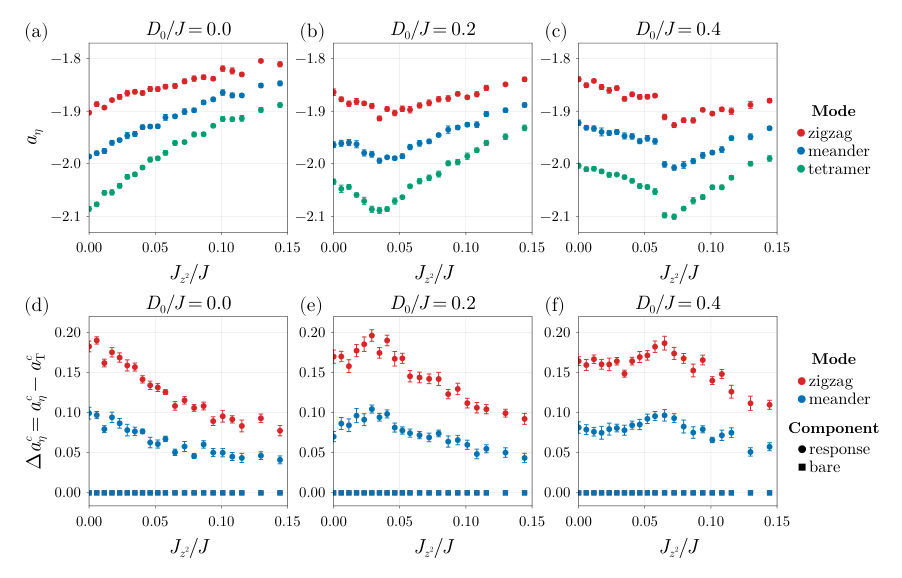
<figcaption class="paper-figure-caption"><b>Fig 2.</b> Fig. 2. (a)–(c) Magnetic contributions aη to the lattice stiffness per site as functions of Jz2/J for D0/J = 0.0, 0.2, and 0.4, respectively. The symbols represent the zigzag (red), meander (blue), and tetramer (green) patterns. (d)–(f) Bare term ∆abare η and response term ∆aresponse η in the differences relative to the tetramer pattern for the same values of D0/J as in (a)–(c). Circles and squares denote the response and bare contributions, respectively. The bare contributions overlap at zero. All values and their differences are expressed in units of J.</figcaption>
</figure>
<figure class="paper-figure-card">
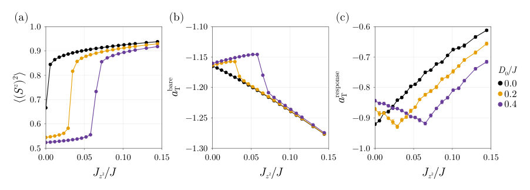
<figcaption class="paper-figure-caption"><b>Fig 3.</b> Fig. 3. (a) Mean-square z component of the spin, ⟨(S z)2⟩. (b) Bare and (c) response terms in the magnetic contribution to the lattice stiffness per site for the tetramer pattern. These terms are expressed in units of J. All quantities are evaluated in the undistorted system and plotted as functions of Jz2/J. Black, orange, and purple symbols correspond to D0/J = 0.0, 0.2, and 0.4, respectively.</figcaption>
</figure>
</div>
<p><strong>Summary.</strong> This work models solid oxygen, an $S=1$ magnet, using an effective spin Hamiltonian derived from a Hubbard-like model. By simulating the magnetic contribution to lattice stiffness, the authors determine that the tetramer distortion is the most stable structure. They show that the competition between different magnetic anisotropies actively drives and strengthens this preference for tetramerization.</p>
<p><strong>Why it may be interesting.</strong> The coupling between magnetic ordering (spin anisotropy) and structural instability (lattice distortion) is a core theme in strongly correlated materials, making this relevant for understanding emergent quantum phases.</p>
<details>
<summary>Detailed structure</summary>
<p><strong>Main problem.</strong> The study investigates the microscopic magnetic mechanism that favors specific lattice distortion patterns, particularly tetramerization, in solid oxygen under pressure.</p>
<p><strong>Main result.</strong> The tetramer pattern is consistently found to be the most favorable distortion pattern across the studied parameter range, and the competition between different spin anisotropies enhances this tendency.</p>
<p><strong>Method.</strong> Quantum Monte Carlo simulations are employed to calculate the magnetic contribution to the lattice stiffness, which determines the stability of various distortion patterns.</p>
<p><strong>Model / system.</strong> The system is solid oxygen, modeled using an effective S=1 spin Hamiltonian derived from a two-orbital Peierls–Hubbard model incorporating spin-orbit coupling. This Hamiltonian includes competing easy-plane and easy-axis anisotropies.</p>
<p><strong>Key observables.</strong> The magnetic contribution to the lattice stiffness ($a_\eta$) for zigzag, meander, and tetramer patterns, and the difference in this contribution ($\Delta a_\eta$).</p>
<p><strong>Important parameters / regimes.</strong> The ratios of single-ion anisotropy ($D_0/J$) and uniaxial exchange anisotropy ($J_{z2}/J$), and the lattice distortion amplitude ($\delta$).</p>
<p><strong>Assumptions / limitations.</strong> The analysis operates in the strong-coupling regime, and certain terms ($\Delta H$) are neglected due to small energy scales.</p>
<p><strong>Figures summary.</strong> Figure 2 shows the magnetic contributions $a_\eta$ to the lattice stiffness per site as a function of $J_{z^2}/J$ for the three distortion patterns at fixed ratios of $D_0/J$.</p>
<p><strong>Paper structure.</strong> The paper derives an effective spin Hamiltonian, calculates the magnetic contribution to the lattice stiffness using QMC simulations, and systematically compares the stability of zigzag, meander, and tetramer patterns based on the calculated $a_\eta$ values.</p>
</details>
<details>
<summary>Abstract</summary>
<p>Solid oxygen is an $S=1$ molecular magnet with strong   coupling between spin and lattice degrees of freedom.   Recent studies suggest that magnetic moments   coexist with tetramer distortions under pressure.   We derive an effective spin Hamiltonian from a two-orbital   Peierls--Hubbard model with spin-orbit coupling.   The resulting model contains competing easy-plane   single-ion and easy-axis exchange anisotropies.   We analyze this model on a square lattice using quantum Monte Carlo simulations   and evaluate the magnetic contribution to the lattice stiffness   for several lattice distortion patterns including the tetramer pattern.   We find that the tetramer pattern is the most favorable   among the considered distortion patterns throughout the parameter range studied.   Moreover, competition between the two anisotropies   enhances the tendency toward lattice distortion   and strengthens the preference for tetramerization over the other patterns.</p>
</details>
<p><sub><a href="#top">↑ back to top</a></sub></p>

<p><a id="paper-2610.37249"></a></p>
<h3 id="htm-a-hybrid-classical-quantum-computation-model"><a href="http://arxiv.org/abs/2610.37249v1">HTM: A Hybrid Classical-Quantum Computation Model</a></h3>
<p><strong>Authors:</strong> Guoqiang Shu, Zongjiang Yi, Jinyang Yao, Haomiao Dong, Zhihang Li, Fudong Liu, Zheng Shan<br>
<strong>Type:</strong> theory · <strong>Category:</strong> quantum information and computing · <strong>PDF:</strong> <a href="https://arxiv.org/pdf/2610.37249v1">https://arxiv.org/pdf/2610.37249v1</a><br>
<strong>Analysis basis:</strong> full PDF text, analyzed in chunks</p>
<div class="figure-strip-hint">↔ Scroll figures horizontally</div>
<div class="paper-figures-scroll">
<figure class="paper-figure-card">
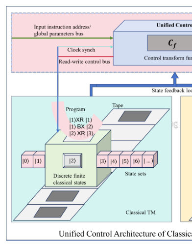
<figcaption class="paper-figure-caption"><b>Fig 1.</b> Fig. 1 Hybrid Turing Machine Architecture: Unified Control with Dual Read-Write Heads.</figcaption>
</figure>
</div>
<p><strong>Summary.</strong> This paper introduces the Hybrid Classical-Quantum Computation Model (HTM) to solve the architectural inconsistencies in current hybrid computing approaches. By unifying state sets and transition functions, HTM provides a rigorous theoretical foundation for scheduling and controlling joint classical-quantum tasks. This standardization is vital for advancing the engineering and development of practical quantum hardware.</p>
<p><strong>Why it may be interesting.</strong> It provides a rigorous, formal framework for integrating classical control flow with quantum unitary evolution, which is crucial for designing next-generation quantum hardware architectures.</p>
<details>
<summary>Detailed structure</summary>
<p><strong>Main problem.</strong> The lack of a unified theoretical model for hybrid classical-quantum computation leads to non-standardized architectures and ambiguous resource partitioning criteria.</p>
<p><strong>Main result.</strong> The proposed Hybrid Classical-Quantum Computation Model (HTM) provides a standardized framework that unifies state representation and control logic for classical and quantum processes.</p>
<p><strong>Method.</strong> The model defines the HTM using a unified state set and transition function, supported by a comprehensive complexity calculation method based on entanglement and superposition.</p>
<p><strong>Model / system.</strong> The HTM is a theoretical computational model featuring a classical track and a quantum track on a shared tape, controlled by a unified controller that manages synchronization and resource sharing.</p>
<p><strong>Key observables.</strong> Time complexity (path length/number of gates) and Space complexity (number of state records/tape cells accessed).</p>
<p><strong>Important parameters / regimes.</strong> The number of qubits ($n$), the size of the entanglement measure ($|E|$), and the number of iterations ($K$).</p>
<p><strong>Assumptions / limitations.</strong> The model adopts deterministic state transitions, and classical states are treated as a special, pure case of quantum states.</p>
<p><strong>Figures summary.</strong> Figure 1 illustrates the Hybrid Turing Machine Architecture, showing the unified control managing dual read/write heads for classical and quantum operations.</p>
<p><strong>Paper structure.</strong> The paper first identifies the gap in hybrid computation models, then formally proposes the HTM structure (7-tuple definition), details the control-sharing mechanism, and finally analyzes the resulting polynomial time complexity compared to exponential classical simulation.</p>
</details>
<details>
<summary>Abstract</summary>
<p>Classical and quantum computers have achieved collaborative computation and completed applications across numerous fields. Nevertheless, the absence of a unified hybrid computation model has led to issues such as non-standardized engineering architecture design, ambiguous task partitioning criteria and so on. To address these issues, this research proposes a hybrid classical-quantum computation model (HTM). By constructing unified state sets and transition function representations, HTM clarifies hybrid control logic and implements a control-sharing mechanism. Simultaneously, a comprehensive complexity calculation method based on entanglement and superposition was proposed, supporting computation task partitioning and resource scheduling. The HTM fills a theoretical gap in the classical-quantum hybrid computation area and implements the joint promotion and development of computing models and hardware.</p>
</details>
<p><sub><a href="#top">↑ back to top</a></sub></p>

<p><a id="paper-2610.37552"></a></p>
<h3 id="meet-in-the-middle-compilation-of-the-math854math-class-with-fibonacci-anyons"><a href="http://arxiv.org/abs/2610.37552v1">Meet-in-the-Middle Compilation of the $[\mathrm{CNOT}]$ Class with Fibonacci Anyons</a></h3>
<p><strong>Authors:</strong> Matvei Fedin, Andrey Morozov<br>
<strong>Type:</strong> theory · <strong>Category:</strong> quantum information and computing · <strong>PDF:</strong> <a href="https://arxiv.org/pdf/2610.37552v1">https://arxiv.org/pdf/2610.37552v1</a><br>
<strong>Analysis basis:</strong> full PDF text, analyzed in chunks</p>
<div class="figure-strip-hint">↔ Scroll figures horizontally</div>
<div class="paper-figures-scroll">
<figure class="paper-figure-card">
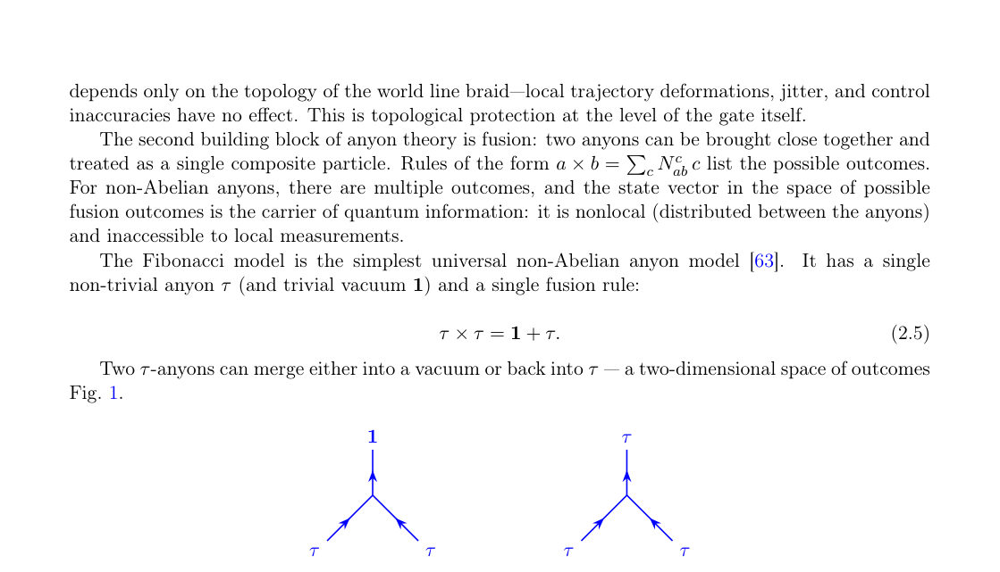
<figcaption class="paper-figure-caption"><b>Fig 1.</b> Figure 1: Two fusion channels of a Fibonacci anyon pair, τ × τ = 1 + τ: vacuum (left) and τ (right). The state vector in outcome space is the carrier of quantum information.</figcaption>
</figure>
<figure class="paper-figure-card">
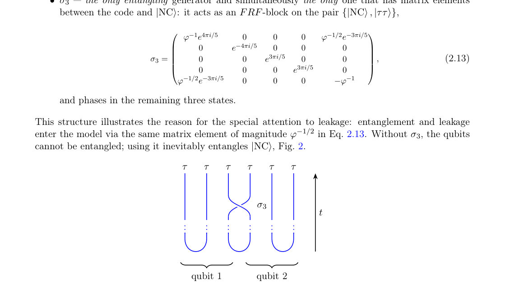
<figcaption class="paper-figure-caption"><b>Fig 2.</b> Figure 2: A two-qubit register of 6 τ anyons (produced by three pairs from the vacuum; time flows upwards) and the action of the generator σ3 — the exchange of anyons 3 and 4. σ3 is the only generator crossing the boundary of qubits: only it entangles them and only it hooks the non-computational state |NC⟩, Eq. (2.13).</figcaption>
</figure>
<figure class="paper-figure-card">
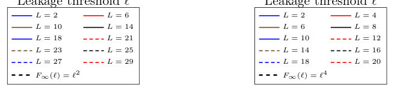
<figcaption class="paper-figure-caption"><b>Fig 3.</b> Figure 3: Exhaustive leakage CDFs for selected lengths in the positive restricted alphabet {σ1, σ2, σ3} (left) and the positive full alphabet {σ1, . . . , σ5} (right). Every word of each displayed length is counted with multiplicity. As the length increases, the finite discrete distributions approach the respective Haar limits F∞(ℓ) = ℓ2 and F∞(ℓ) = ℓ4 proved in Appendix B. The black dotted lines mark ℓ= φ−1. The finite-length curves were obtained by exhaustive enumeration in production machine arithmetic; they illustrate convergence but are not used to prove Haar mixing.</figcaption>
</figure>
<figure class="paper-figure-card">
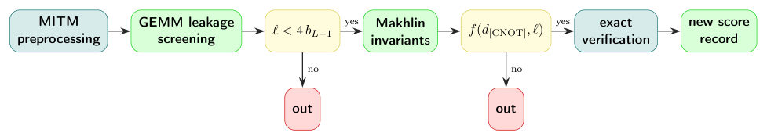
<figcaption class="paper-figure-caption"><b>Fig 4.</b> Figure 4: A MITM-GEMM pipeline. The semibraids are enumerated independently, after which the values of U00(ab) = ra · cb are batch-computed using GEMM. For candidates that pass the ℓ&lt; 4bL−1 filter, the Makhlin invariants are calculated and one of two optimization criteria is applied: min S = d + 4ℓor min ℓfor d[CNOT] &lt; 10−4. The finalists undergo a rigorous check.</figcaption>
</figure>
<figure class="paper-figure-card">
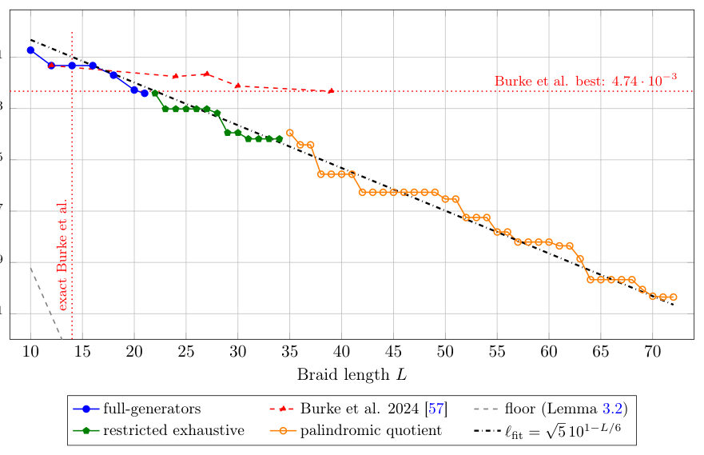
<figcaption class="paper-figure-caption"><b>Fig 5.</b> Figure 5: Leakage of the best [CNOT] class gate as a function of braid length. The straight-line fit is chosen as the simplest combination of rational numbers and the golden ratio φ. The fraction of variance explained by the ℓfit function is R2 = 0.9851.</figcaption>
</figure>
</div>
<p><strong>Summary.</strong> This work develops advanced computational and mathematical techniques to find high-fidelity implementations of the CNOT gate using Fibonacci anyons. By employing a Meet-in-the-Middle search pipeline, the authors push the achievable braid length significantly while proving that exhaustive search methods provide superior asymptotic guarantees compared to random sampling for minimizing leakage.</p>
<p><strong>Why it may be interesting.</strong> The rigorous mathematical analysis of leakage and the comparison of search algorithms provide deep theoretical tools for assessing the feasibility and error scaling of topological quantum computation protocols.</p>
<details>
<summary>Detailed structure</summary>
<p><strong>Main problem.</strong> The paper addresses the challenge of finding low-leakage representatives for the $[\mathrm{CNOT}]$ class of two-qubit gates using Fibonacci anyons in topological quantum computation.</p>
<p><strong>Main result.</strong> They successfully extended the exhaustive search for optimal braids to length $L=72$ and proved that exhaustive search asymptotics outperform random sampling for finding low-leakage gates.</p>
<p><strong>Method.</strong> The authors combine a Meet-In-The-Middle (MITM) GPU pipeline with exhaustive search techniques, alongside rigorous mathematical analysis of leakage distributions via limit laws.</p>
<p><strong>Model / system.</strong> The model is topological quantum computation utilizing Fibonacci anyons, whose dynamics are governed by the braid group. The quality of the gate is assessed by minimizing leakage ($\ell$) from the computational sector to higher fusion space states.</p>
<p><strong>Key observables.</strong> Leakage ($\ell$), error distance ($d_{[\mathrm{CNOT}]}$), and the dimension of fusion spaces ($ ext{dim } V_{   au  imes n}$).</p>
<p><strong>Important parameters / regimes.</strong> Braid length ($L$), the golden ratio ($\varphi$), and the specific dimensions $d=3$ and $d=5$ related to the fusion space.</p>
<p><strong>Assumptions / limitations.</strong> The analysis relies on the assumption that the support of the generators generates a dense subgroup of the projective unitary group $PU(d)$ to apply Haar measure convergence theorems.</p>
<p><strong>Figures summary.</strong> Not specified, but the notes reference limit laws $F_{3,\infty}(\ell)=\ell^2$ and $F_{5,\infty}(\ell)=\ell^4$ derived from distribution function analysis.</p>
<p><strong>Paper structure.</strong> The paper progresses from defining the physical problem (leakage in $[\mathrm{CNOT}]$) to developing advanced search algorithms (MITM, exhaustive search), followed by rigorous mathematical proofs regarding leakage bounds and asymptotic distribution laws.</p>
</details>
<details>
<summary>Abstract</summary>
<p>Compilation of two-qubit Fibonacci anyon gates is complicated by leakage ($\ell$) from the four-dimensional computational sector to the fifth state of the fusion space. We construct a GPU pipeline to find low-leakage representatives of the $[\text{CNOT}]$ class on different subsets of the braid group.   We exhaustively explore the full positive five-generator alphabet up to $L=21$ with minimal leakage $\ell\sim10^{-3}$ and error $d_{[\text{CNOT}]}\sim 10^{-8}$ on it. To reach larger lengths, the search space is successively narrowed to three-generator, boundary-$σ_3$, and palindromic braids, and by considering only the Garside left normal form. These optimizations allow us to reach $L=72$. For $L=69$, a braid with $\ell\sim10^{-10}$ and $d_{[\text{CNOT}]}\sim 10^{-10}$ is found.   In addition to directly enumerating optimal braids, we proved that $\ell\in\mathbb Z[\varphi]$, and any nonzero leakage obeys an exponential lower bound in the braid length, and obtained the limit laws $F_{3,\infty}(\ell)=\ell^2$ and $F_{5,\infty}(\ell)=\ell^4$ for our sets. Using asymptotics for the distribution function $F$, we showed that for sufficiently long braids, the asymptotics of exhaustive search are better than the asymptotics of random sampling for finding low-leakage braids.</p>
</details>
<p><sub><a href="#top">↑ back to top</a></sub></p>

<p><a id="paper-2610.37586"></a></p>
<h3 id="on-the-fly-estimation-of-quantum-corrected-thermodynamics-in-lammps"><a href="http://arxiv.org/abs/2610.37586v1">On-the-fly Estimation of Quantum-Corrected Thermodynamics in LAMMPS</a></h3>
<p><strong>Authors:</strong> Robert Ramji, Ilya Mazalov, Ricardo Buarque, Alexandria Do, Xiaoxu Ruan, Tod A. Pascal<br>
<strong>Type:</strong> theory · <strong>Category:</strong> statistical mechanics · <strong>PDF:</strong> <a href="https://arxiv.org/pdf/2610.37586v1">https://arxiv.org/pdf/2610.37586v1</a><br>
<strong>Analysis basis:</strong> full PDF text, analyzed in chunks</p>
<div class="figure-strip-hint">↔ Scroll figures horizontally</div>
<div class="paper-figures-scroll">
<figure class="paper-figure-card">
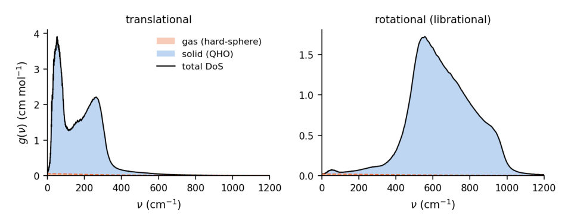
<figcaption class="paper-figure-caption"><b>Fig 1.</b> Figure 1: Two-phase decomposition of the density of states of supercooled TIP4P/2005 water at 220 K (averaged over 100 ps analysis windows of the Table 10 dataset). Left: translational channel, showing the ∼50 cm−1 O⋯O⋯O bending and ∼250 cm−1 O⋯O stretching bands; right: rotational (librational) channel. The hard-sphere gas component (dashed) is barely visible on this scale: at 220 K the fluidicity is only 𝑓≈0.035, i.e. the supercooled liquid is almost entirely solid-like in the 2PT partition.</figcaption>
</figure>
<figure class="paper-figure-card">
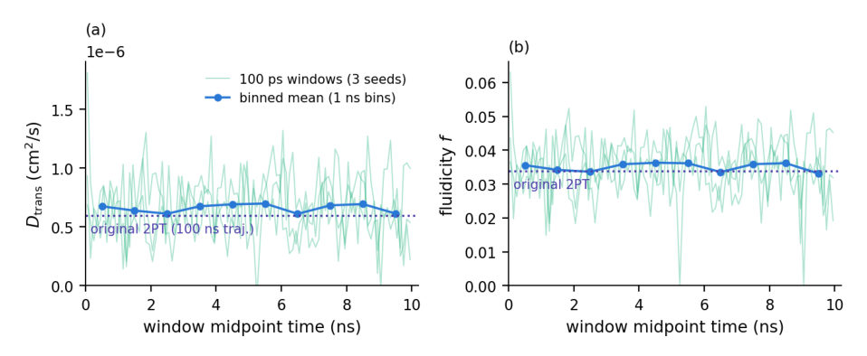
<figcaption class="paper-figure-caption"><b>Fig 2.</b> Figure 2: Window-resolved (a) translational self-diffusivity and (b) fluidicity of supercooled TIP4P/2005 water at 220 K. Thin traces: one hundred consecutive 100 ps analysis windows for each of three independently seeded 10 ns trajectories; circles: 1 ns binned means; dotted line: the original-2PT reference. The window values are stationary and bracket the reference from the first window onward.</figcaption>
</figure>
<figure class="paper-figure-card">
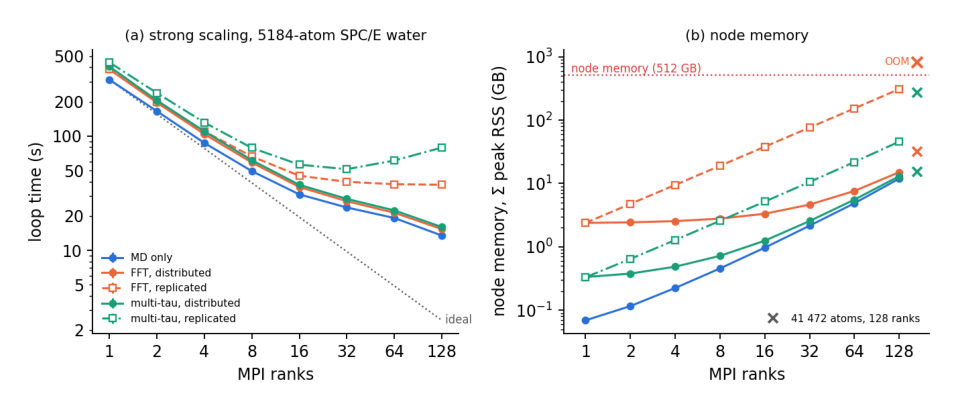
<figcaption class="paper-figure-caption"><b>Fig 3.</b> Figure 3: Single-node scaling of FixXPT on a 128-core Perlmutter CPU node (5184-atom SPC/E water, molecular mode, one analysis window of 𝑁𝑠= 5000; mean of two replicates, with bars spanning them). (a) Loop time versus MPI rank count for the MD alone and with the FFT or multi-tau correlator in the distributed (filled) or replicated (open) layout; the dotted line is ideal scaling of the MD from one rank. (b) Node memory, the sum over ranks of each rank’s peak resident set. The distributed layout stores one copy of the window’s history across the node and the replicated layout one copy per rank. Crosses mark 41 472 atoms on 128 ranks, a single run, where the replicated FFT run exceeds the...</figcaption>
</figure>
<figure class="paper-figure-card">
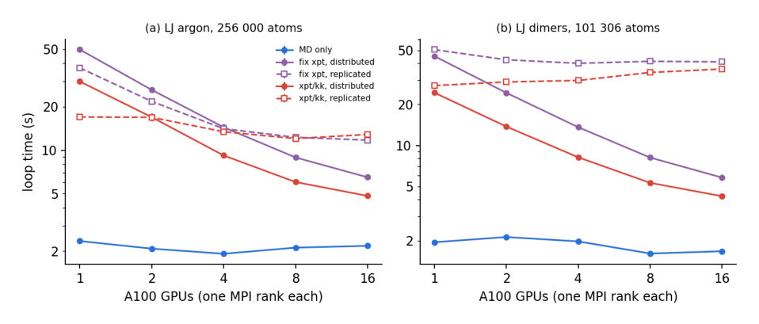
<figcaption class="paper-figure-caption"><b>Fig 4.</b> Figure 4: GPU strong scaling of FixXPT on Perlmutter A100 nodes (one MPI rank per GPU, four GPUs per node, GPU- aware MPI, MD under -sf kk; 𝑁𝑠= 1000; mean of two replicates, with bars spanning them). (a) 256 000 Lennard-Jones argon atoms, monatomic mode. (b) 101 306 atoms of Lennard-Jones dimers, molecular mode. Loop time for the MD alone and with the CPU class (fix xpt) or xpt/kk in the distributed (filled) or replicated (open) layout.</figcaption>
</figure>
</div>
<p><strong>Summary.</strong> This paper introduces FixXPT, a novel, efficient LAMMPS package for calculating quantum-corrected thermodynamic properties directly during molecular dynamics simulations. It uses the Two/Three-Phase Thermodynamics method to derive observables like entropy and free energy from the velocity autocorrelation function. The work is significant for its computational scalability and its ability to provide rigorous thermodynamic data for complex liquid systems.</p>
<p><strong>Why it may be interesting.</strong> While focused on classical MD, the rigorous treatment of quantum corrections to thermodynamics and the development of highly scalable, on-the-fly computational tools for calculating fundamental thermodynamic potentials is highly relevant to understanding quantum many-body dynamics in condensed matter.</p>
<details>
<summary>Detailed structure</summary>
<p><strong>Main problem.</strong> The paper addresses the challenge of obtaining absolute, quantum-corrected thermodynamic quantities (like entropy and free energy) from molecular dynamics simulations, as these are not simple ensemble averages.</p>
<p><strong>Main result.</strong> The authors introduce FixXPT, a native LAMMPS fix, which successfully calculates these observables by analyzing the density of states derived from the velocity autocorrelation function.</p>
<p><strong>Method.</strong> The core method utilizes the Two/Three-Phase Thermodynamics (xPT) approach, decomposing the density of states into gas-like, solid-like, and optionally cage components, and implementing efficient correlators (FFT and multi-tau) for on-the-fly calculation.</p>
<p><strong>Model / system.</strong> The method is applied to condensed phases, such as supercooled water (TIP4P/2005) and Lennard-Jones systems, allowing for the study of complex liquid states and phase behavior.</p>
<p><strong>Key observables.</strong> Entropy, free energy, enthalpy, heat capacity, diffusivity, and fluidicity.</p>
<p><strong>Important parameters / regimes.</strong> The partitioning modes (1PT, 2PT, 3PT), the Gaussian bandwidth parameter ($B_g$), and the simulation temperature/density.</p>
<p><strong>Assumptions / limitations.</strong> The method relies on decomposing the total density of states and assumes the validity of the xPT framework; specific approximations are made for the gas component (e.g., Gaussian kernel model).</p>
<p><strong>Figures summary.</strong> Figures illustrate the two-phase decomposition of the density of states for supercooled water, window-resolved self-diffusivity and fluidicity, and computational scaling tests showing the efficiency of the FixXPT implementation on both CPU and GPU architectures.</p>
<p><strong>Paper structure.</strong> The paper details the theoretical basis of xPT, presents the implementation as a LAMMPS fix (FixXPT), provides two efficient correlator implementations, and validates the method through extensive computational scaling tests on complex liquid models.</p>
</details>
<details>
<summary>Abstract</summary>
<p>We present a native implementation of the Two/Three-Phase Thermodynamics (xPT, $x \in \{2,3\}$) method within the LAMMPS molecular dynamics framework, termed FixXPT. xPT is an approach for obtaining absolute, quantum-corrected thermodynamics (entropy, enthalpy, free energy, heat capacity, diffusivity) from the density of states function, obtained from the velocity autocorrelation function of an equilibrium trajectory. FixXPT addresses non-trivial integration challenges, including atom reordering, compute scheduling, FFT backends, unit systems, and partitioning of atomic velocities into molecular modes. Two autocorrelators are provided: a Wiener-Khinchin FFT correlator with one cumulative window-end operation, and an in-line multi-tau correlator whose memory footprint grows only logarithmically with the window length, removing the principal scaling bottleneck for long analysis windows. The velocity history of each window is distributed across the MPI ranks, so the memory the fix adds to a node stays nearly constant as ranks are added and its cost falls with the number of GPUs. Replaying identical velocity frames through FixXPT and the stand-alone pyxPT post-processor reproduces every thermodynamic observable of well-sampled groups to within 0.1 to 0.5% across the full analysis-mode matrix; sparsely populated ionic species agree within their statistical uncertainty, and the multi-tau VACF converges monotonically to the FFT result as its buffer grows, from 0.8% to 0.1% drift across a 16-fold buffer sweep. The code is distributed as a drop-in LAMMPS package.</p>
</details>
<p><sub><a href="#top">↑ back to top</a></sub></p>

<p><a id="paper-2610.37040"></a></p>
<h3 id="quantum-annealing-for-gamma-ray-source-detection-and-localization-with-agile-data"><a href="http://arxiv.org/abs/2610.37040v1">Quantum Annealing for Gamma-ray Source Detection and Localization with AGILE Data</a></h3>
<p><strong>Authors:</strong> Alessandro Rizzo, Nicolò Parmiggiani, Andrea Bulgarelli, Gabriele Panebianco, Carlo Burigana, Vincenzo Fabrizio Cardone, Farida Farsian, Massimo Meneghetti, Giuseppe Murante, Giuseppe Sarracino, Roberto Scaramella, Francesco Schillirò, Vincenzo Testa, Tiziana Trombetti, Fabio Roberto Vitello<br>
<strong>Type:</strong> theory · <strong>Category:</strong> quantum information and computing · <strong>PDF:</strong> <a href="https://arxiv.org/pdf/2610.37040v1">https://arxiv.org/pdf/2610.37040v1</a><br>
<strong>Analysis basis:</strong> full PDF text, analyzed in chunks</p>
<div class="figure-strip-hint">↔ Scroll figures horizontally</div>
<div class="paper-figures-scroll">
<figure class="paper-figure-card">
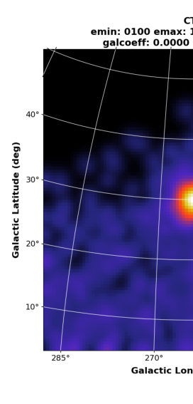
<figcaption class="paper-figure-caption"><b>Fig 1.</b> Figure 1: A simulated AGILE count map centered at high Galactic latitude.</figcaption>
</figure>
<figure class="paper-figure-card">
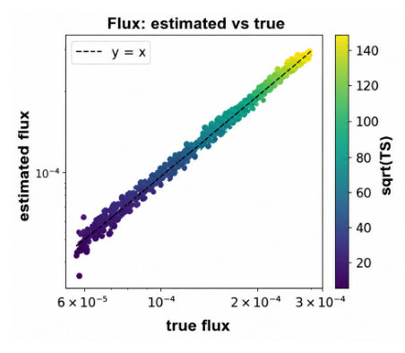
<figcaption class="paper-figure-caption"><b>Fig 2.</b> Figure 2: Flux and isotropic estimates from the classical AGILEpy analysis.</figcaption>
</figure>
<figure class="paper-figure-card">
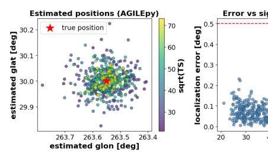
<figcaption class="paper-figure-caption"><b>Fig 3.</b> Figure 3: Localization results of the classical AGILEpy analysis.</figcaption>
</figure>
<figure class="paper-figure-card">

<figcaption class="paper-figure-caption"><b>Fig 4.</b> Figure 4: QUBO results against the true values for the source flux (left) and the background (right).</figcaption>
</figure>
<figure class="paper-figure-card">
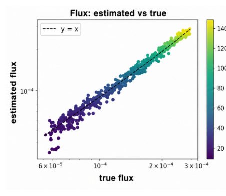
<figcaption class="paper-figure-caption"><b>Fig 5.</b> Figure 5: QUBO versus classical detection significance ( √</figcaption>
</figure>
</div>
<p><strong>Summary.</strong> This paper proposes using quantum annealing to solve the complex parameter optimization problem involved in detecting and localizing gamma-ray sources from AGILE data. By reformulating the likelihood maximization into a QUBO, the authors show that simulated quantum annealing accurately reproduces classical results and achieves high localization success rates. This work serves as a proof-of-concept for deploying quantum computation in astrophysical data analysis.</p>
<p><strong>Why it may be interesting.</strong> It demonstrates a direct, practical application of quantum optimization techniques (QUBO/Quantum Annealing) to a high-energy astrophysics problem, bridging quantum computation with observational physics.</p>
<details>
<summary>Detailed structure</summary>
<p><strong>Main problem.</strong> The core challenge is performing complex parameter optimization for detecting and localizing gamma-ray sources from AGILE data.</p>
<p><strong>Main result.</strong> The quantum annealing approach successfully reproduces classical flux and position estimates within statistical uncertainty and correctly identifies the true source location in 97% of simulated maps.</p>
<p><strong>Method.</strong> The continuous optimization problem (maximizing likelihood) is reformulated into a Quadratic Unconstrained Binary Optimization (QUBO) problem, which is then solved using simulated quantum annealing.</p>
<p><strong>Model / system.</strong> The analysis uses observations from AGILE's Gamma-Ray Imaging Detector (GRID) in the 30 MeV-50 GeV band. The objective function is derived from the Poisson log-likelihood, approximated by a least-squares $\chi^2$ cost function.</p>
<p><strong>Key observables.</strong> Source fluxes, background normalization, Test Statistic (TS), and the estimated source position $(\alpha, \delta)$.</p>
<p><strong>Important parameters / regimes.</strong> The problem involves a large number of binary variables (up to $\approx 10^3$) and is tested on simulated AGILE maps.</p>
<p><strong>Assumptions / limitations.</strong> The method relies on the Gaussian approximation and fixed-point binary expansion to convert continuous parameters into binary variables. It also assumes the presence of a single active source.</p>
<p><strong>Figures summary.</strong> Figures compare classical AGILEpy estimates to true values for flux and background, show localization results, and compare the QUBO-derived significance ($\sqrt{TS}$) against classical methods.</p>
<p><strong>Paper structure.</strong> The paper introduces the scientific problem, reformulates it into a QUBO, details the simulation setup using AGILEpy, presents the results comparing quantum annealing to classical methods, and discusses limitations regarding problem size and approximations.</p>
</details>
<details>
<summary>Abstract</summary>
<p>The detection and localization of gamma-ray sources via maximum-likelihood analysis is a complex parameter optimization problem. We address this challenge using quantum annealing, a computational approach that solves optimization tasks by encoding them into the ground state of an Ising Hamiltonian. Specifically, we apply this method to observations from AGILE's Gamma-Ray Imaging Detector (GRID) in the 30 MeV-50 GeV band. We reformulated the standard analysis as a Quadratic Unconstrained Binary Optimization (QUBO) problem. We tested this method on a set of AGILE observations generated with AGILEpy, solving the QUBO with simulated quantum annealing. The method reproduces the classical flux and position estimates within their statistical uncertainty and identifies the correct grid node among the candidate positions in 97% of the maps. These promising results demonstrate that quantum annealing could be used in this optimization problem, laying the ground for its deployment on actual quantum annealers.</p>
</details>
<p><sub><a href="#top">↑ back to top</a></sub></p>

<p><a id="paper-2610.36680"></a></p>
<h3 id="quantum-state-preparation-for-complex-valued-amplitudes"><a href="http://arxiv.org/abs/2610.36680v1">Quantum State Preparation for Complex-Valued Amplitudes</a></h3>
<p><strong>Authors:</strong> Fred Sun<br>
<strong>Type:</strong> theory · <strong>Category:</strong> quantum information and computing · <strong>PDF:</strong> <a href="https://arxiv.org/pdf/2610.36680v1">https://arxiv.org/pdf/2610.36680v1</a><br>
<strong>Analysis basis:</strong> full PDF text, analyzed in chunks</p>
<div class="figure-strip-hint">↔ Scroll figures horizontally</div>
<div class="paper-figures-scroll">
<figure class="paper-figure-card">
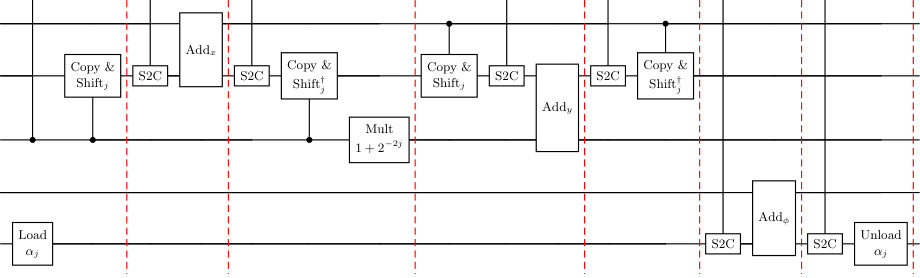
<figcaption class="paper-figure-caption"><b>Fig 1.</b> FIG. 1. One CORDIC iteration, with each slice marking the end of a stage. (1) Copy the sign of yj into sj, prepare 2−jyj, and load αj. (2) Use controlled S2C and addition to update xj+1. (3) Clear the shifted operand and multiply y by 1 + 2−2j. (4) Prepare 2−jxj+1 and use controlled S2C and addition to update yj+1. (5) Clear the shifted operand. (6) Add the signed angle −djαj to ϕ. (7) Restore and unload the angle operand. The Copy &amp; Shift gates copy the arithmetic right shift.</figcaption>
</figure>
</div>
<p><strong>Summary.</strong> This paper details a quantum circuit protocol to prepare a quantum state representing a complex number $z$ from its real and imaginary components. It leverages the CORDIC algorithm for calculating the magnitude and phase, followed by amplitude and phase gates for state construction. The method offers resource advantages over naive encoding schemes.</p>
<p><strong>Why it may be interesting.</strong> While focused on quantum arithmetic, the ability to efficiently encode complex parameters like amplitudes is foundational for simulating quantum field theories or quantum optics phenomena where complex amplitudes are central.</p>
<details>
<summary>Detailed structure</summary>
<p><strong>Main problem.</strong> The paper addresses the challenge of preparing a quantum state that approximates a complex number $z = x + iy$, given its real and imaginary parts stored in separate binary registers.</p>
<p><strong>Main result.</strong> A quantum state preparation procedure is presented that successfully encodes the complex amplitude $z'/\alpha$ using $O(n^2)$ T gates and $O(n)$ additional qubits.</p>
<p><strong>Method.</strong> The method combines the Coordinate Rotation Digital Computer (CORDIC) algorithm to compute the magnitude and argument, followed by using the Amplitude Modulation Procedure (AMP) and phase gates to construct the final state.</p>
<p><strong>Model / system.</strong> The model is a quantum computation framework where the input is a complex number $z$ represented by fixed-point binary registers $|x
angle$ and $|y
angle$. The process relies on reversible quantum arithmetic circuits.</p>
<p><strong>Key observables.</strong> The primary observable is the resulting quantum amplitude proportional to $z'/\alpha$, and the computed polar representation ($r', \phi'$).</p>
<p><strong>Important parameters / regimes.</strong> The complexity scales with $n$ (number of bits) as $O(n^2)$ T gates, and the error bound is $\mathcal{O}(2^{-(n-l)/ \alpha + 2^{-n}})$.</p>
<p><strong>Assumptions / limitations.</strong> The procedure assumes the availability of reversible arithmetic operations and that the magnitude bound allows for a smaller normalization constant compared to separate encoding methods.</p>
<p><strong>Figures summary.</strong> Figure 1 illustrates a single iteration of the CORDIC algorithm, detailing the controlled S2C and addition steps for updating the coordinates and angle.</p>
<p><strong>Paper structure.</strong> The paper details the CORDIC computation for magnitude and argument, followed by the amplitude encoding using AMP and phase gates. A significant portion covers the reversible implementation of arithmetic operations, such as multiplication and input state recovery.</p>
</details>
<details>
<summary>Abstract</summary>
<p>We present a state preparation procedure that takes binary registers containing the real and imaginary parts of a complex number $z=x+iy$ and prepares an amplitude approximating $z/α$, where $α$ is a normalization constant. The magnitude and argument are computed using the Coordinate Rotation Digital Computer (CORDIC) algorithm. We then encode the magnitude into an amplitude, and apply phase gates to introduce the argument. A reversible in-place multiplier allows the coordinate updates to use fixed precision while clearing their temporary workspace. The procedure uses $O(n^2)$ $T$ gates and $O(n)$ additional qubits. Compared with separately encoding the real and imaginary parts and combining them through LCU, the construction can allow a smaller normalization and reduce amplitude-amplification costs. The computed polar representation also remains available for further arithmetic before amplitude-encoding.</p>
</details>
<p><sub><a href="#top">↑ back to top</a></sub></p>

<p><a id="paper-2610.36421"></a></p>
<h3 id="radial-power-like-potentials-from-the-bohr-sommerfeld-math907math-state-energies-to-the-exact-ones"><a href="http://arxiv.org/abs/2610.36421v1">Radial power-like potentials: from the Bohr-Sommerfeld $\ell \neq 0$ state energies to the exact ones</a></h3>
<p><strong>Authors:</strong> J. C. del Valle, A. V. Turbiner<br>
<strong>Type:</strong> theory · <strong>Category:</strong> other · <strong>PDF:</strong> <a href="https://arxiv.org/pdf/2610.36421v1">https://arxiv.org/pdf/2610.36421v1</a><br>
<strong>Analysis basis:</strong> full PDF text, analyzed in chunks</p>
<div class="figure-strip-hint">↔ Scroll figures horizontally</div>
<div class="paper-figures-scroll">
<figure class="paper-figure-card">
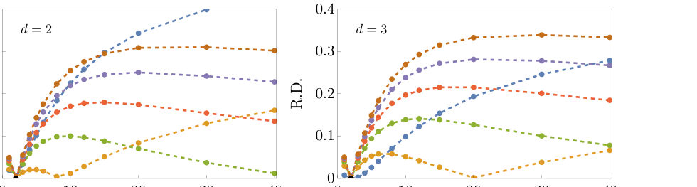
<figcaption class="paper-figure-caption"><b>Fig 1.</b> Figure 1: Relative Deviation (R.D.) of the ground state energy, see (20) versus m for angular momenta ℓ= 1, 2, 3, 4, 5 in dimensions d = 2, 3. Bullets indicate actual calculations; dashed curves drawn for convenience. At m = 2, marked by black bubble, the relative deviation is zero.</figcaption>
</figure>
<figure class="paper-figure-card">
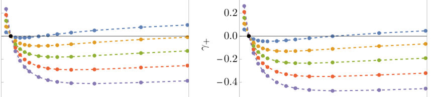
<figcaption class="paper-figure-caption"><b>Fig 2.</b> Figure 2: WKB Correction γ+ for the ground state energy, see (22) versus m for the angular momenta ℓ= 1, 2, 3, 4, 5 in dimensions d = 2, 3. Bullets indicate actual calculations; dashed curves drawn for convenience. At m = 2, see black bubble, the WKB correction vanishes.</figcaption>
</figure>
<figure class="paper-figure-card">
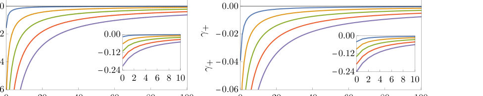
<figcaption class="paper-figure-caption"><b>Fig 3.</b> Figure 3: WKB Correction γ+ for the quartic potential V (r) = r4 vs nr for ℓ= 1, 2, 3, 4, 5 and d = 2, 3.</figcaption>
</figure>
<figure class="paper-figure-card">
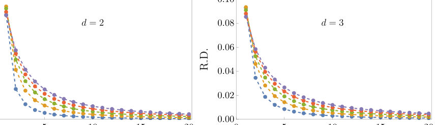
<figcaption class="paper-figure-caption"><b>Fig 4.</b> Figure 4: Logarithmic potential: Relative Deviation (R.D), see (20), as a function of nr for the angular momenta ℓ= 1, 2, 3, 4, 5 and dimension d = 2, 3. Bullets indicate actual calculations; dashed curves drawn for illustration.</figcaption>
</figure>
<figure class="paper-figure-card">
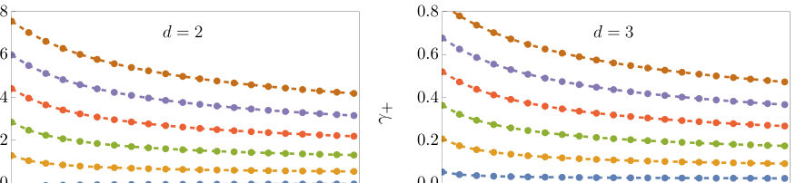
<figcaption class="paper-figure-caption"><b>Fig 5.</b> Figure 5: Logarithmic potential: WKB Correction γ+, see (5), as a function of nr for the angular momenta ℓ= 1, 2, 3, 4, 5 and dimension d = 2, 3. Bullets indicate actual calculations; dashed curves drawn for illustration, see (40).</figcaption>
</figure>
</div>
<p><strong>Summary.</strong> This paper develops and validates a generalized Bohr-Sommerfeld quantization rule for radial potentials in arbitrary dimensions and angular momenta. By introducing a small WKB correction term ($\gamma$), the authors demonstrate that this rule accurately predicts the energy spectrum for a wide range of power-law potentials, offering a powerful analytical tool for quantum energy level estimation.</p>
<p><strong>Why it may be interesting.</strong> This work provides a powerful, systematic analytical tool (the corrected B-S quantization rule) to estimate energy levels in complex quantum systems, which is valuable for theoretical modeling in condensed matter or atomic physics where exact solutions are rare.</p>
<details>
<summary>Detailed structure</summary>
<p><strong>Main problem.</strong> The paper generalizes the Bohr-Sommerfeld (B-S) quantization condition from zero angular momentum ($\ell=0$) to non-zero angular momentum ($\ell 
eq 0$) for radial potentials in $d$ dimensions.</p>
<p><strong>Main result.</strong> The proposed B-S quantization condition, when augmented with a dimensionless WKB correction ($\gamma$), successfully reproduces the exact energy spectrum for various power-like potentials, including the harmonic oscillator and Coulomb potential.</p>
<p><strong>Method.</strong> The authors use the WKB approximation applied to the radial Schrödinger equation, proposing a generalized quantization rule and systematically testing its accuracy against highly accurate numerical solutions.</p>
<p><strong>Model / system.</strong> The study analyzes the radial Schrödinger equation for $d$-dimensional potentials of the form $V(r) = 	ext{sign}(m) r^m$, covering cases like $r^2$ (harmonic oscillator) and $-1/r$ (Coulomb potential).</p>
<p><strong>Key observables.</strong> Energy eigenvalues ($E$), Bohr-Sommerfeld energies ($E_{	ext{BS}}$), and the WKB correction term ($\gamma$).</p>
<p><strong>Important parameters / regimes.</strong> Spatial dimension ($d$), angular momentum ($\ell$), radial quantum number ($n_r$), and the potential exponent ($m$).</p>
<p><strong>Assumptions / limitations.</strong> The primary assumption is that the B-S quantization condition can be generalized and corrected by a small parameter $\gamma$ to match exact results for a wide class of potentials.</p>
<p><strong>Figures summary.</strong> Figures illustrate the convergence of the WKB correction ($\gamma_+$) with increasing radial quantum number ($n_r$) for the quartic oscillator, and tables systematically compare $E_{	ext{exact}}$ against $E_{	ext{BS}}$ and $\gamma^+$ for various $\ell$ and $m$.</p>
<p><strong>Paper structure.</strong> The paper introduces the generalized B-S condition, details its application to various power-law potentials ($V=r^m$), and then rigorously tests the accuracy of the approximation by calculating and analyzing the WKB correction $\gamma$ across multiple quantum numbers and angular momenta.</p>
</details>
<details>
<summary>Abstract</summary>
<p>Two new Bohr-Sommerfeld (B-S) type quantization conditions for $d$-dimensional radial potentials are proposed for non-singular and singular potentials, respectively. The power-like potentials \hbox{$V=\operatorname{sign}(m)\,r^m$} for $m=-3/2,-1,-1/2, 1,3,4,6$ and $V=\log r$ (that corresponds to $m=0$) are studied in detail for radial quantum numbers $n_r \in [0,100]$ and for angular momenta $\ell=1,2,3,4,5$ in dimensions $d=2,3$. It is shown that for large $n_r$ the B-S energies $E_{BS}$ always tend to the exact ones. For $m=2$ (the radial harmonic oscillator) and $m=-1$ (the $d$-dimensional analogue of the $3D$ Coulomb potential) the B-S spectrum coincides with the exact one for the first and second quantization conditions, respectively. In general, up to a small parametric shift of the radial quantum number, the analytic formulas for the energy spectrum can be written for arbitrary power-like potential. A comparison of $E_{BS}$ with the energies $E^{(L)}_{BS}$, obtained for the radial potentials modified by the Langer correction for $d=3$, are in good agreement in general: in detail, it was checked for the quartic oscillator $V=r^4$. It is demonstrated that introducing a dimensionless {\it WKB correction} $γ$ into the r.h.s. of the proposed B-S type quantization condition allows us to reproduce the exact energies with $γ$ being very small for positive degrees $m \geq 0$ and sufficiently small for non-positive ones $m < 0$ for all $n_r, \ell$ studied.</p>
</details>
<p><sub><a href="#top">↑ back to top</a></sub></p>

<p><a id="paper-2610.37337"></a></p>
<h3 id="security-analysis-of-ekert-type-qkd-protocol-coming-under-cloning-attacks"><a href="http://arxiv.org/abs/2610.37337v1">Security Analysis of Ekert-type QKD Protocol Coming Under Cloning Attacks</a></h3>
<p><strong>Authors:</strong> Kaushiki Mukherjee, Sumana Karmakar<br>
<strong>Type:</strong> theory · <strong>Category:</strong> quantum information and computing · <strong>PDF:</strong> <a href="https://arxiv.org/pdf/2610.37337v1">https://arxiv.org/pdf/2610.37337v1</a><br>
<strong>Analysis basis:</strong> full PDF text, analyzed in chunks</p>
<div class="figure-strip-hint">↔ Scroll figures horizontally</div>
<div class="paper-figures-scroll">
<figure class="paper-figure-card">
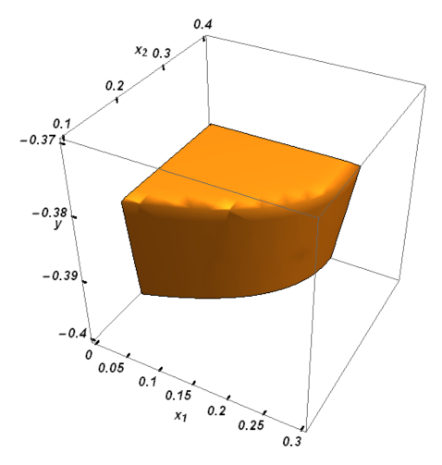
<figcaption class="paper-figure-caption"><b>Fig 1.</b> Figure 1: Shaded region gives a subspace in the parameter space (x1, x2, y) of ρAB specified by Eq.(12). When ρAB corresponding to any point in the region is used in PC1 QKD with θ= π</figcaption>
</figure>
<figure class="paper-figure-card">
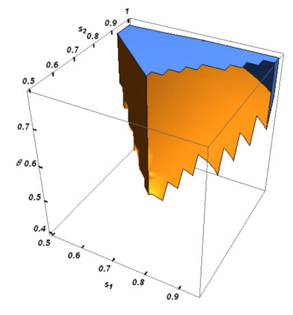
<figcaption class="paper-figure-caption"><b>Fig 2.</b> Figure 2: Shaded region indicates a subspace in the parameter space (s1, s2, θ) for which two-qubit states(corresponding to (s1, s2) in this region) from the family specified by Eq.(14) cannot be used to design successful PC1 QKD specified by cloning parameter θ corresponding to point (s1, s2, θ) lying in this region although the protocol passes both the validation checks.</figcaption>
</figure>
<figure class="paper-figure-card">
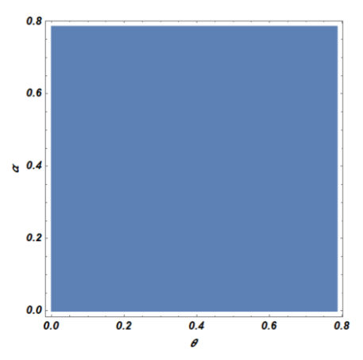
<figcaption class="paper-figure-caption"><b>Fig 3.</b> Figure 3: At any point (θ, α) in the shaded region, f1(θ, α), given in Eq.(44) is positive. Clearly the shaded region covers the entire parameter space formed by the parameter(α) of the pure state(Eq.(7)) and the parameter(θ) characterizing the cloning operation(Eq.(6)).</figcaption>
</figure>
<figure class="paper-figure-card">
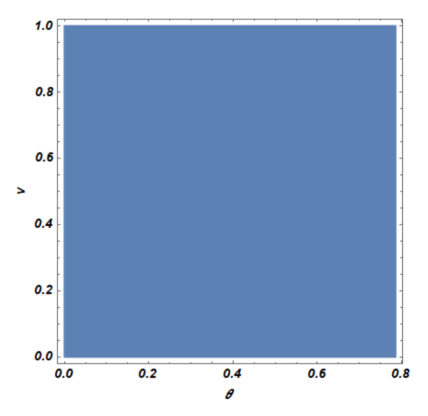
<figcaption class="paper-figure-caption"><b>Fig 4.</b> Figure 4: At any point (θ, v) in the shaded region, f2(θ, v), given in Eq.(52) is positive. Clearly the shaded region covers the entire parameter space formed by the parameter(v) of Werner state(Eq.(9)) and the parameter(θ) characterizing the cloning operation(Eq.(6)).</figcaption>
</figure>
</div>
<p><strong>Summary.</strong> This work provides a rigorous security analysis of Ekert-type QKD protocols against cloning attacks by calculating the distillable key rate using the Devetak-Winter framework. It demonstrates that simply passing standard quantum checks is insufficient for security, as the key rate must remain positive even when the eavesdropper performs complex cloning operations on the transmitted qubits.</p>
<p><strong>Why it may be interesting.</strong> The rigorous application of key rate calculations to quantify security under specific, physically motivated attacks (cloning) provides a deeper understanding of the limitations of entanglement-based protocols beyond simple violation checks.</p>
<details>
<summary>Detailed structure</summary>
<p><strong>Main problem.</strong> The paper analyzes the security of Ekert-type Quantum Key Distribution (QKD) protocols when subjected to cloning attacks by an untrusted eavesdropper.</p>
<p><strong>Main result.</strong> The distillable secret key rate ($r_D$) must be calculated using the Devetak-Winter framework, showing that passing standard checks (like Bell violation) is insufficient for guaranteeing security against cloning.</p>
<p><strong>Method.</strong> The security is quantified by calculating the Devetak-Winter key rate, $r_D = \sum (I(A:B) - \chi(A:E))$, which must be positive for a secret key to be distilled.</p>
<p><strong>Model / system.</strong> The analysis focuses on bipartite entangled two-qubit states ($
ho_{AB}$) shared between two trusted parties (A and B), subjected to asymmetric, phase-variant cloning attacks on one or both qubits.</p>
<p><strong>Key observables.</strong> Distillable secret key rate ($r_D$), Mutual Information ($I$), and Holevo quantity ($\chi$).</p>
<p><strong>Important parameters / regimes.</strong> Cloning parameters ($   heta, \alpha, v$), and the local Bloch vectors characterizing the initial state $
ho_{AB}$.</p>
<p><strong>Assumptions / limitations.</strong> The analysis assumes the specific adversarial model involving asymmetric, phase-variant cloning operations on the transmitted qubits.</p>
<p><strong>Figures summary.</strong> Figures illustrate that the key rate remains positive ($r_D > 0$) for pure states and Werner states under single-qubit cloning attacks across defined parameter regimes.</p>
<p><strong>Paper structure.</strong> The paper progresses by first establishing the necessary security metric ($r_D$), then analyzing the single-qubit cloning attack ($  ext{PC1QKD}$) for various state types, and finally contrasting these results with the more severe two-qubit cloning attack ($  ext{PC2QKD}$).</p>
</details>
<details>
<summary>Abstract</summary>
<p>We analyze the security of an Ekert type bipartite key distribution protocol coming under cloning attacks by an untrusted observer. Precisely, an eavesdropper is assumed to intercept and apply an asymmetric, phase-variant cloner on one or both qubits which are transmitted over public channel from an authenticated source to the trusted parties. We partially characterize two-qubit states from the perspective of designing a QKD protocol that can generate a distillable secret key among the trusted users even under such cloning attacks. We rely upon Devetak Winter framework for computing key rate so as to identify states, which when used in the protocol, secret-key can be distilled. Utility of an entangled state, for designing a successful QKD protocol, changes from single-qubit to double-qubits cloning attacks. Interestingly, we can distinguish some useful families of two-qubit entangled states when only one of the transmitted qubits is cloned by a malicious third party.</p>
</details>
<p><sub><a href="#top">↑ back to top</a></sub></p>

<p><a id="paper-2610.36358"></a></p>
<h3 id="vortex-anisotropy-in-chiral-and-nematic-superconductors-with-strain"><a href="http://arxiv.org/abs/2610.36358v1">Vortex anisotropy in chiral and nematic superconductors with strain</a></h3>
<p><strong>Authors:</strong> David Shuliutsky, Moshe Goldstein<br>
<strong>Type:</strong> theory · <strong>Category:</strong> strongly correlated electrons · <strong>PDF:</strong> <a href="https://arxiv.org/pdf/2610.36358v1">https://arxiv.org/pdf/2610.36358v1</a><br>
<strong>Analysis basis:</strong> full PDF text, analyzed in chunks</p>
<div class="figure-strip-hint">↔ Scroll figures horizontally</div>
<div class="paper-figures-scroll">
<figure class="paper-figure-card">

<figcaption class="paper-figure-caption"><b>Fig 1.</b> FIG. 1. Phase diagram for a homogeneous two-component superconductor. The different colours of shaded regions indi- cate the different phases, with green, blue and red standing for normal, nematic, and quasi-chiral phases, respectively. The slope of the borderline between the normal and nematic phase is always ±1. (a) For β &gt; 0, only the normal and nematic phases are allowed. (b) For β &lt; 0, the quasi-chiral phase is also allowed. The slope of the borderline between the nematic and quasi-chiral phase is ± β 1+β .</figcaption>
</figure>
<figure class="paper-figure-card">

<figcaption class="paper-figure-caption"><b>Fig 2.</b> FIG. 2. Nematicity of a homogeneous two-component super- conductor with β &lt; 0 as a function of α for ϵ = 0.05. An initially quasi-chiral state becomes nematic at a transition point given by Eq. (7), after which it is in the nematic phase until α = |ϵ|.</figcaption>
</figure>
<figure class="paper-figure-card">

<figcaption class="paper-figure-caption"><b>Fig 3.</b> FIG. 3. The solution for the magnetic field B(r) of a single vortex core with parameters α = −1, F2 = 0, F4 = 0.1, ϵ = −0.05 in two different phases: (a) Nematic phase with β = 0.1 and (b) Quasi-chiral phase with β = −0.1. In the inset plots, the x- and y-axis profiles of the magnetic field are shown, as well as a red line showing the half-maximal magnetic field level, Bmax/2. The intersection of this line with the x and y profiles sets the major and minor radii of the ellipse approximating the shape of the vortex, also shown as the red ellipse in the main graph. Using the ratio between these radii, the anisotropy of the vortex, AB, is calculated, and is shown on the plot.</figcaption>
</figure>
<figure class="paper-figure-card">

<figcaption class="paper-figure-caption"><b>Fig 4.</b> FIG. 4. The anisotropy of the magnetic field in the vortex core AB with α = −1 as a function of F4 and the strain ϵ. (a) and (c) are in the nematic phase with β = 0.1, while (b) and (d) are in the quasi-chiral phase with β = −0.1. The anisotropy changes parametrically slower for the quasi-chiral case, as O(|ϵF4|), while it changes as O(|F4|) in the nematic case. Changing from F2 = 0 in (a) and (b) to F2 = 0.5 in (c) and (d) retains the scaling, but the anisotropy of the vortex decreases with increasing F2.</figcaption>
</figure>
<figure class="paper-figure-card">

<figcaption class="paper-figure-caption"><b>Fig 5.</b> FIG. 6. Ratio between the low temperature anisotropy of the magnetic field in the vortex core, AB with α = −1, and the anisotropy of the critical field, AHc2, near the transition (which, by Eq. (14) and Ref. 24, is independent of α for −2|ϵ/F4| &lt; α &lt; |ϵ|) as a function of F4 and the strain ϵ. (a) and (c) are in the nematic phase with β = 0.1, while (b) and (d) are in the quasi-chiral phase with β = −0.1. A clear variation of the anisotropy ratio under change of ϵ is seen in the quasi-chiral phase while it is nearly constant in the nematic phase. Changing from F2 = 0 in (a) and (b) to F2 = 0.5 in (c) and (d) retains the scaling but the anisotropy of the vortex decreases with increasing F2.</figcaption>
</figure>
</div>
<p><strong>Summary.</strong> This theoretical work analyzes vortex anisotropy in superconductors exhibiting nematic or chiral symmetry breaking, using a Ginzburg-Landau framework. By developing numerical and analytical solutions, the authors show that the strain dependence of the vortex anisotropy differs significantly between the two phases. This provides a robust theoretical tool to help experimentally distinguish between nematic and chiral superconducting states.</p>
<p><strong>Why it may be interesting.</strong> The detailed study of symmetry breaking and phase transitions in superconducting order parameters, particularly the coupling between strain and superconducting symmetry, is highly relevant to understanding exotic quantum states in condensed matter systems.</p>
<details>
<summary>Detailed structure</summary>
<p><strong>Main problem.</strong> The paper investigates the vortex anisotropy in unconventional superconductors that exhibit both nematic and chiral superconducting phases, specifically examining how uniaxial strain affects this anisotropy.</p>
<p><strong>Main result.</strong> The vortex anisotropy exhibits distinct functional dependencies on strain for the nematic versus the quasi-chiral phase, providing a potential experimental diagnostic to distinguish between these two superconducting states.</p>
<p><strong>Method.</strong> The study employs a phenomenological Ginzburg-Landau approach, utilizing numerical simulations (TDGL) and analytical perturbation theory to solve for vortex solutions.</p>
<p><strong>Model / system.</strong> The system models unconventional superconductors with a two-component order parameter, governed by a free energy functional that includes terms for nematicity and chirality, and is perturbed by uniaxial strain.</p>
<p><strong>Key observables.</strong> Vortex shape and anisotropy ($A_B$), critical magnetic field anisotropy ($A_{H_{c2}}$), and the nematicity parameter.</p>
<p><strong>Important parameters / regimes.</strong> Uniaxial strain ($\epsilon$), deviation from critical temperature ($\alpha$), and phenomenological parameters ($F_4$).</p>
<p><strong>Assumptions / limitations.</strong> The analysis relies on a phenomenological Ginzburg-Landau free energy expansion and uses approximations (e.g., Fourier series expansion, perturbative expansion) to solve the coupled differential equations.</p>
<p><strong>Figures summary.</strong> Figures illustrate the phase diagram showing coexistence of Normal, Nematic, and Quasi-chiral phases, and plot the evolution of vortex anisotropy ($A_B$) versus temperature/strain, demonstrating different scaling behaviors for the two phases.</p>
<p><strong>Paper structure.</strong> The paper develops the Ginzburg-Landau equations, applies numerical methods (TDGL) and analytical techniques (perturbation theory in Fourier space) to solve for vortex solutions, and compares the resulting anisotropy scaling laws for the nematic and quasi-chiral regimes.</p>
</details>
<details>
<summary>Abstract</summary>
<p>Unconventional superconductors with a two-component order parameter support the existence of a rotational symmetry breaking nematic phase and a time-reversal symmetry breaking chiral phase. A recent experiment on 4Hb-TaS$_2$ surprisingly shows both twofold anisotropy in $H_{c2}$, which suggests nematic superconductivity, as well as isotropic vortices at low temperatures, which suggest chiral superconductivity. To resolve this apparent conundrum we write down the appropriate Ginzburg-Landau equations and develop a numerically efficient algorithm for finding vortex solutions, allowing us to study their shape and anisotropy over a broad parameter range. We also demonstrate analytically that, to leading order, the vortex anisotropy is independent of strain in the nematic case, but is linearly dependent on it in the chiral phase, providing a possible way to distinguish the two phases. Using all these results we show that, in the presence of strain, in a large parameter regime the system behaves nematically near the transition, leading to an anisotropy of $H_{c2}$, but is dominantly chiral away from the transition, leading to parametrically smaller vortex anisotropy, in line with the experiment.</p>
</details>
<p><sub><a href="#top">↑ back to top</a></sub></p>
</details>
<h2 id="secondary-cond-mat-archives">Secondary cond-mat archives</h2>
<p><em>Papers from cond-mat.mtrl-sci, mes-hall, other, soft, supr-con. These archives are de-prioritized — they appear at the end regardless of relevance score.</em></p>
<h3 id="relevant-in-secondary-archives-23">Relevant in secondary archives (23)</h3>

<p><a id="paper-2610.36705"></a></p>
<h3 id="in-situ-control-of-the-photon-magnon-synchronized-mode-in-a-miniaturized-magnetometer"><a href="http://arxiv.org/abs/2610.36705v1">In-situ Control of the Photon-Magnon Synchronized Mode in a Miniaturized Magnetometer</a></h3>
<p><strong>Authors:</strong> Yuting Shi, Xudong Wang, Yue Zhao, Lijun Yan, Bimu Yao, Shishen Yan, Lihui Bai, Jinwei Rao<br>
<strong>Type:</strong> both · <strong>Category:</strong> other · <strong>PDF:</strong> <a href="https://arxiv.org/pdf/2610.36705v1">https://arxiv.org/pdf/2610.36705v1</a><br>
<strong>Analysis basis:</strong> full PDF text, analyzed in chunks
<strong>Topic relevance:</strong> <code>analog quantum simulation</code> <strong>3/5</strong> · <code>driven-dissipative phase transition</code> <strong>3/5</strong> · <code>quantum measurements</code> <strong>3/5</strong> · <code>quantum optics experiment</code> <strong>3/5</strong> · <code>Keldysh / 2PI / non-Gaussian methods</code> <strong>2/5</strong> · <code>correlated / nonlocal dissipation</code> <strong>2/5</strong> · <code>methods for driven-dissipative</code> <strong>2/5</strong> · <code>QC/QI experiment</code> <strong>1/5</strong> · <code>Tavis-Cummings &amp; cavity-many-emitter</code> <strong>1/5</strong> · <code>interference shaping light</code> <strong>1/5</strong> · <code>non-equilibrium universality</code> <strong>1/5</strong></p>
<div class="figure-strip-hint">↔ Scroll figures horizontally</div>
<div class="paper-figures-scroll">
<figure class="paper-figure-card">

<figcaption class="paper-figure-caption"><b>Fig 1.</b> FIG. 1. (a) Schematic of the integrated planar magne- tometer. The blue component highlights the VR positioned at the waveguide end, which is utilized for in-situ tuning of the terminal impedance (reflection coefficient Γ) to modulate the standing-wave environment. A low-noise amplifier (LNA) compensates for cavity damping, while a YIG sphere inter- acts with the CPW, and a SA monitors the output signal.(b) Schematic of the coupling effect in the PMSM system. Φ rep- resents the microwave propagation phase from the cavity to the VR, and φ denotes the relative phase shift between the photon and magnon modes</figcaption>
</figure>
<figure class="paper-figure-card">

<figcaption class="paper-figure-caption"><b>Fig 2.</b> FIG. 3. (a) Extracted frequency detuning ∆ωs/2π as a func- tion of the coil current I for different reflection coefficients Γ. Hollow circles represent the experimental data, and solid black lines denote the corresponding fits using Eq. 3. The de- tuning values corresponding to the extrema of the first deriva- tive of each dispersion curve are highlighted (red stars con- nected by a dashed line) and projected onto the Y OZ plane to illustrate the evolution. (b) Extracted effective coupling strength |g|/2π as a function of Γ. (c) Maximum slope of the frequency shift with respect to the coil current, d(ω/2π)/dI, as a function of Γ.</figcaption>
</figure>
<figure class="paper-figure-card">

<figcaption class="paper-figure-caption"><b>Fig 3.</b> FIG. 2. (a) Radiation spectra of the system measured by the SA under two different coil currents at a fixed terminal resis- tance. (b-d) Mappings of the magnetometer as a function of the coil current, measured under different terminal resistances (from top to bottom: 1.2 Ω, 50.3 Ω, and 551 Ω, respectively) while maintaining the system at the same. The white dashed curves represent the theoretical fitting results based on Eq. 3.</figcaption>
</figure>
<figure class="paper-figure-card">

<figcaption class="paper-figure-caption"><b>Fig 4.</b> Figure 2 (a) presents a comparison of two emission spectra of our device measured at different magnetic fields. As the coil current is tuned, the magnetic field ex- perienced by the YIG sphere changes. Consequently, the resonant peak in the emission spectrum shifts to a higher frequency, demonstrating the magnetic-field-dependent response of the PMSM. To further characterize the in situ tunability of our device with respect to the mag- netic field and the reflection coefficient, we performed measurements at three different VR resistance values. Figures 2(b)–(d) show the corresponding spectral map- pings versus coil current for these three resistance values. All measurements are performed...</figcaption>
</figure>
<figure class="paper-figure-card">

<figcaption class="paper-figure-caption"><b>Fig 5.</b> FIG. 4. (a)-(d) Calculated effective coupling strength |g|2 (solid blue lines) and critical condition |g|2 th (dashed or- ange lines) versus the reflection amplitude Γ at four typical standing-wave phases Φ = 0, π/2, π, and 3π/2, respectively. (e) Two-dimensional colormap mapping the net coupling pa- rameter δ (δ = |g|2 −|g|2 th) across the full (Γ, Φ) parameter space. The dark red zones (δ &gt; 0) and the orange to blue zones (δ &lt; 0) denote the bistable and monostable regions, re- spectively, separated by the exact critical condition (δ = 0).</figcaption>
</figure>
</div>

<p><strong>Summary.</strong> This paper presents a miniaturized and highly tunable magnetometer based on Photon-Magnon Synchronized Modes (PMSMs). By integrating a variable resistor, the authors achieve in-situ control over the photon-magnon coupling strength by altering the electromagnetic boundary conditions. This work provides a pathway for developing compact, electrically controllable magnetic sensing devices.</p>
<p><strong>Why it may be interesting.</strong> This work is highly relevant to open quantum systems and quantum optics because it demonstrates active, electrical control over a fundamental quantum interaction (photon-magnon coupling) in a solid-state, integrated platform, moving beyond passive sensing.</p>
<details>
<summary>Detailed structure</summary>
<p><strong>Main problem.</strong> The goal is to develop a miniaturized and tunable magnetometer based on Photon-Magnon Synchronized Modes (PMSMs) to enhance magnetic-field sensing while overcoming the limitations of bulky, non-tunable existing devices.</p>
<p><strong>Main result.</strong> The authors successfully realized a compact and tunable PMSM magnetometer, demonstrating that the photon-magnon coupling strength can be controlled in situ by adjusting the device's electrical impedance.</p>
<p><strong>Method.</strong> The study combines experimental measurements on a PCB-integrated device with theoretical modeling using a non-Hermitian effective Hamiltonian.</p>
<p><strong>Model / system.</strong> The system is a miniaturized PMSM magnetometer integrating a YIG sphere (magnon source) and a planar cavity/CPW (photon source). The dynamics are modeled using a non-Hermitian Hamiltonian, incorporating reservoir-mediated effects via a variable resistor (VR) that tunes the reflection coefficient ($\Gamma$).</p>
<p><strong>Key observables.</strong> The primary observables include the PMSM detuning ($\Delta\omega_s$), the coupling strength ($|g|$), and the magnetic-field-dependent spectral shift ($d(\omega/2\pi)/dI$).</p>
<p><strong>Important parameters / regimes.</strong> Key parameters include the reflection coefficient ($\Gamma$), the VR resistance ($R$), and the magnetic field/coil current ($I$), which are used to tune the system's coupling and operating point.</p>
<p><strong>Assumptions / limitations.</strong> The analysis relies on constructing a non-Hermitian effective Hamiltonian and analyzing the system's steady state using a cubic equation derived under assumptions about fixed phase differences.</p>
<p><strong>Figures summary.</strong> Figures illustrate the device schematic showing the VR for tuning $\Gamma$, the Hamiltonian structure, and experimental results showing how the PMSM detuning and coupling strength vary as a function of the VR setting ($\Gamma$) and the applied magnetic field current ($I$).</p>
<p><strong>Paper structure.</strong> The paper introduces the physical problem and the miniaturized device. It develops the theoretical framework using a non-Hermitian Hamiltonian to describe the coupled photon-magnon interaction. The core of the work demonstrates the tunability by analyzing how the coupling strength and the system's bistability regime can be controlled by adjusting the reflection coefficient $\Gamma$ via the VR.</p>
</details>
<details>
<summary>Abstract</summary>
<p>Photon-magnon synchronized modes (PMSMs) provide a route for magnetic-field sensing by exploiting their enhanced field responsivity due to cusp points (CPs). However, the previous PMSM magnetometer relies on bulky discrete components and lacks in situ control of photon-magnon interactions, limiting its integration and adaptability. Here, we demonstrate a miniaturized PMSM magnetometer integrated on a printed circuit board. A variable resistor is used to tune the photon-magnon coupling strength in situ. By adjusting the variable resistor, the electromagnetic boundary condition of the magnetometer is altered; hence, the reservoir-mediated photon-magnon interaction is changed. The coupling strength shows a non-monotonic dependence on the reflection coefficient adjusted by the variable resistor and reaches its minimum at the impedance matching condition. Furthermore, we develop a non-Hermitian model with standing-wave interference to describe the PMSM dispersion and derive the critical condition for CP formation. This work realizes a compact and tunable PMSM magnetometer and provides a pathway for controlling photon-magnon interactions in integrated magnetic sensing systems.</p>
</details>
<p><sub><a href="#top">↑ back to top</a></sub></p>

<p><a id="paper-2610.37164"></a></p>
<h3 id="reconstructing-chiral-edge-states-via-boundary-dissipation"><a href="http://arxiv.org/abs/2610.37164v1">Reconstructing chiral edge states via boundary dissipation</a></h3>
<p><strong>Authors:</strong> Xin-Ran Ma, Kui Cao, Qian Du, Zheng Wei, Su-Peng Kou<br>
<strong>Type:</strong> theory · <strong>Category:</strong> other · <strong>PDF:</strong> <a href="https://arxiv.org/pdf/2610.37164v1">https://arxiv.org/pdf/2610.37164v1</a><br>
<strong>Analysis basis:</strong> full PDF text, analyzed in chunks
<strong>Topic relevance:</strong> <code>analog quantum simulation</code> <strong>3/5</strong> · <code>correlated / nonlocal dissipation</code> <strong>3/5</strong> · <code>driven-dissipative phase transition</code> <strong>3/5</strong> · <code>methods for driven-dissipative</code> <strong>3/5</strong> · <code>non-equilibrium universality</code> <strong>3/5</strong> · <code>Keldysh / 2PI / non-Gaussian methods</code> <strong>2/5</strong> · <code>quantum measurements</code> <strong>1/5</strong></p>
<div class="figure-strip-hint">↔ Scroll figures horizontally</div>
<div class="paper-figures-scroll">
<figure class="paper-figure-card">

<figcaption class="paper-figure-caption"><b>Fig 1.</b> FIG. 1. Boundary reconstruction in the QWZ cylinder. (a) Schematic of boundary loss applied to both orbitals at y = 1. (b) Dispersion of Re E at γ/t = 0.5, with color indicating Im E/t. (c),(d) Complex-energy spectra at γ/t = 0.12 and 8, respectively. Red denotes the lossy outer-edge branches, blue denotes the opposite-edge branch and, in (d), the re- constructed inner-edge branch, and gray denotes the remain- ing states. The sketches illustrate the spatial profiles of the modes at kx = 0. The inset in (d) magnifies the reconstructed branch, whose decay rate follows Γ ∼t2/γ in the strong-loss limit. The parameters are M/t = −1 and Ny = 40.</figcaption>
</figure>
<figure class="paper-figure-card">

<figcaption class="paper-figure-caption"><b>Fig 2.</b> FIG. 2. Boundary bases in the QWZ model. (a) Bright- dark (strong-loss) basis (D, B, tQ), where D and B are lossy outer-row states and only B couples directly to the inner-edge state tQ. (b) Weak-loss basis (n−, B, t0), obtained through the unitary transformation U(k), with t0 denoting the original topological edge state. Filled areas indicate orbital weights, outline colors indicate phases, and red shading marks the lossy row.</figcaption>
</figure>
<figure class="paper-figure-card">

<figcaption class="paper-figure-caption"><b>Fig 3.</b> FIG. 3. Energy spectra and decay mechanisms in the QWZ model. (a)–(d) Energy spectra (blue) and analytical edge-state spectra (red) at γ/t = 0.2, 0.5, 2, 7, respectively. (e) Weak-loss direct-decay coefficient Wtt/γ = Zk and dissipative coupling |Wnt|/γ = |rk|√Zk. (f) Strong-loss decay rate Γ/t ≃tZk/γ and bright–inner coupling strength Gk/t = √Zk at γ/t = 7. (g),(h) Real energies and decay rates of the three kx = 0 channels. The inset shows the smallest singular value σ = smin(V ), which vanishes at the EP. The parameters are M/t = −1, Ny = 40, with x-PBC and y-OBC.</figcaption>
</figure>
<figure class="paper-figure-card">

<figcaption class="paper-figure-caption"><b>Fig 4.</b> FIG. 4. Boundary channels and spectra in the Haldane model. (a) Schematic of boundary dissipation in the Haldane model with zigzag edges, showing nearest-neighbor hopping t1, next- nearest-neighbor hopping t2eiϕ, and onsite loss at y = 1 (red). (b) Squared intercell coupling strengths λ±/t2 1; the inset highlights the weaker coupling channel λ−. (c) Residual self-energy elements |Σreg mn|/t1 (m, n ∈{B, D}) at kx = 0.8π, evaluated along E = ϵQ −iω. (d) Real parts of the bright– inner boundary poles at kx = π. The inset shows the splitting near the EP at γEP/t1 = 2.27. The parameters: t2/t1 = 0.2, M = 0, ϕ = π/2, and Ny = 40.</figcaption>
</figure>
</div>

<p><strong>Summary.</strong> This theoretical work develops a detailed microscopic model to analyze how boundary dissipation modifies chiral edge states in topological insulators. It successfully derives distinct scaling laws for decay rates in both weak and strong loss limits. The findings offer a unified, predictive framework applicable to various engineered wave systems.</p>
<p><strong>Why it may be interesting.</strong> The explicit derivation of decay mechanisms in topological systems under dissipation provides concrete, testable predictions for engineered quantum platforms like photonic or phononic crystals, bridging topological theory with open quantum systems.</p>
<details>
<summary>Detailed structure</summary>
<p><strong>Main problem.</strong> The paper aims to develop a unified microscopic framework to explain how boundary dissipation affects the spatial profiles and decay mechanisms of chiral edge states in Chern insulators.</p>
<p><strong>Main result.</strong> It establishes distinct scaling laws for decay rates in weak-loss ($\propto \gamma$) and strong-loss ($\propto 1/\gamma$) regimes, providing a unified description of boundary-state reconstruction.</p>
<p><strong>Method.</strong> The authors use a microscopic boundary-channel framework involving Hamiltonian projection techniques to derive effective Hamiltonians and solve for the poles of the Green's function.</p>
<p><strong>Model / system.</strong> The study analyzes Chern insulators using the Qi–Wu–Zhang (QWZ) model and the Haldane model, modeling the system on a cylinder geometry with engineered boundary loss.</p>
<p><strong>Key observables.</strong> Decay rate ($\Gamma$), boundary reconstruction, and the location of exceptional points (EPs) in the non-Hermitian spectrum.</p>
<p><strong>Important parameters / regimes.</strong> Loss strength ($\gamma$), intercell hopping parameters ($t_1, t_2$), and the ratio of loss regimes ($\gamma/t$).</p>
<p><strong>Assumptions / limitations.</strong> The analysis relies on the weak-loss approximation for small $\gamma$ and assumes the existence of a spectrally isolated inner edge state for the strong-loss analysis.</p>
<p><strong>Figures summary.</strong> Figures illustrate boundary reconstruction in the QWZ model across different loss regimes, showing the transition from direct edge damping to inner-edge decay, and detail the boundary dissipation analysis for the Haldane model.</p>
<p><strong>Paper structure.</strong> The paper develops the microscopic boundary-channel framework, applies it to the QWZ and Haldane models, derives the distinct weak-loss and strong-loss decay rate formulas, and compares the resulting spectral features and exceptional point locations.</p>
</details>
<details>
<summary>Abstract</summary>
<p>Boundary dissipation can reshape the spatial profiles and decay properties of topological edge modes in Chern insulators. We develop a microscopic boundary-channel framework to explain their decay mechanisms and determine the effective decay rates in the weak- and strong-loss regimes. By retaining the lossy outer orbitals and a normalized edge state of the Hermitian inner system, we identify a directly coupled bright boundary channel, while incorporating the remaining inner states through a Feshbach self-energy. In the Qi--Wu--Zhang model, weak-loss decay is governed to leading order by the original edge state's probability weight on the lossy boundary, with coupling-induced corrections starting at cubic order. At strong loss, the reconstructed inner-edge state instead decays through virtual coupling to the damped bright channel, giving a rate proportional to the squared microscopic coupling and inversely proportional to the bare loss. The Haldane model shows that the same leading decay mechanism holds for a different intercell hopping structure, while additional matrix-valued self-energy feedback modifies the boundary spectrum at finite loss and shifts the exceptional-point threshold. These results provide a unified microscopic description of boundary-state reconstruction and its decay mechanisms, offering testable predictions to guide experiments in photonic crystals, phononic crystals, and topolectrical circuits.</p>
</details>
<p><sub><a href="#top">↑ back to top</a></sub></p>

<p><a id="paper-2610.36504"></a></p>
<h3 id="spectral-oscillations-and-temporal-meandering-of-dissipative-solitons-in-a-moving-intracavity-phase-potential"><a href="http://arxiv.org/abs/2610.36504v1">Spectral Oscillations and Temporal Meandering of Dissipative Solitons in a Moving Intracavity Phase Potential</a></h3>
<p><strong>Authors:</strong> Heng Dong, Xiankun Yao, Wen-Li Yang<br>
<strong>Type:</strong> both · <strong>Category:</strong> other · <strong>PDF:</strong> <a href="https://arxiv.org/pdf/2610.36504v1">https://arxiv.org/pdf/2610.36504v1</a><br>
<strong>Analysis basis:</strong> full PDF text, analyzed in chunks
<strong>Topic relevance:</strong> <code>driven-dissipative phase transition</code> <strong>3/5</strong> · <code>methods for driven-dissipative</code> <strong>3/5</strong> · <code>Keldysh / 2PI / non-Gaussian methods</code> <strong>2/5</strong> · <code>non-equilibrium universality</code> <strong>2/5</strong> · <code>Frenkel-Kontorova</code> <strong>1/5</strong> · <code>analog quantum simulation</code> <strong>1/5</strong> · <code>correlated / nonlocal dissipation</code> <strong>1/5</strong> · <code>interference shaping light</code> <strong>1/5</strong> · <code>superradiant laser</code> <strong>1/5</strong></p>
<div class="figure-strip-hint">↔ Scroll figures horizontally</div>
<div class="paper-figures-scroll">
<figure class="paper-figure-card">

<figcaption class="paper-figure-caption"><b>Fig 1.</b> Figure 1. (a) Schematic of the mode-locked fiber laser cavity, consisting of an amplifier, a saturable absorber (SA), a phase modulator (PM) driven by an RF signal, and fiber segments. DSs circulate within the cavity. (b) Schematic illustration of a DS (green pulse) interacting with a moving phase potential (red curve). The quantities vMP and vs correspond to the phase-potential velocity and the DS drift velocity, respectively, both defined relative to the unperturbed DS trajectory. Panels (i) and (ii) correspond to opposite phase gradients, yielding frequency shifts δω and drift velocities vs of opposite signs. Panel (iii) corresponds to the synchronization condition δω=δω∞, where vs=vMP...</figcaption>
</figure>
<figure class="paper-figure-card">

<figcaption class="paper-figure-caption"><b>Fig 2.</b> Figure 1(a) shows the configuration of the mode-locked fiber laser cavity, which comprises an amplifier, a saturable absorber (SA), a phase modulator (PM), and fiber segments. A phase modulation is imposed on the intracavity field. Figure 1(b) schematically depicts the relative motion between the DS and the moving phase potential. A temporal phase gradient imposed on the pulse induces an instantaneous frequency shift, [43] which is subsequently translated into temporal drift through dispersion. As a result, the DS (green pulse) acquires a drift velocity vs relative to its unperturbed trajectory in the absence of phase modulation, while the phase potential (red curve) generated by...</figcaption>
</figure>
<figure class="paper-figure-card">

<figcaption class="paper-figure-caption"><b>Fig 3.</b> Figure 2(a) and (b) show the spectral and temporal evolutions of the DS at a detuning angular frequency of 0.024, respectively. The color maps show the numerical simulation results. Pronounced periodic spectral oscillations are observed are observed in response to the moving phase potential. The green dashed line in Figure 2(a) indicates the spectral centroid. Using the centroid evolution equation obtained from the variational analysis Equation (2), the temporal trajectory can be reconstructed through  0</figcaption>
</figure>
<figure class="paper-figure-card">

<figcaption class="paper-figure-caption"><b>Fig 4.</b> Figure 2. Numerical simulation results. (a) Spectral evolution of the DS at a detuning angular frequency Δ 0.024 ω  . (b) Corresponding temporal evolution. The colormaps show the numerical simulation results, and the green dashed lines indicate the evolution of the spectral centroid and temporal positions of DS, respectively. (c) Spectral oscillation amplitude A and (d) oscillation period TO as functions of detuning angular frequency. Blue circles denote numerical results, red solid lines are theoretical predictions of Equation (2), and black solid lines indicate the ideal linear predictions. The gray dashed line marks the synchronization threshold Δω∞=0.0193.</figcaption>
</figure>
<figure class="paper-figure-card">

<figcaption class="paper-figure-caption"><b>Fig 5.</b> Figure 3. Detailed schematic of the experimental setup. EDF, erbium-doped fiber; WDM, wavelength-division multiplexer; CNT-SA, carbon- nanotube saturable absorber; VOA, Adjustable optical attenuator; PC, polarization controller; OSA, optical spectrum analyzer; OSC, oscilloscope; PD, photodetector.</figcaption>
</figure>
</div>

<p><strong>Summary.</strong> This research explores how Dissipative Solitons behave when driven by a moving phase potential in an optical cavity. The key finding is a transition from chaotic, oscillating dynamics at large driving mismatches to a controlled, synchronized locking state at small mismatches. This offers a route for electrically controlling the spectral response of nonlinear optical cavities.</p>
<p><strong>Why it may be interesting.</strong> This work provides a concrete example of controlling nonlinear wave dynamics in an open, dissipative system, which shares mathematical parallels with driven-dissipative quantum systems and nonlinear optics.</p>
<details>
<summary>Detailed structure</summary>
<p><strong>Main problem.</strong> The paper investigates the spectral and temporal dynamics of Dissipative Solitons (DSs) when subjected to a moving intracavity phase potential.</p>
<p><strong>Main result.</strong> The dynamics transition from persistent spectral oscillations and temporal meandering at large detuning to a stable, synchronized locking state at small detuning.</p>
<p><strong>Method.</strong> The study combines numerical simulations, theoretical analysis using a perturbative variational approach, and experimental validation using mode-locked fiber lasers.</p>
<p><strong>Model / system.</strong> The system is modeled using the extended complex Ginzburg–Landau equation (ECGLE) applied to a mode-locked fiber laser cavity, where the DS interacts with a moving phase potential.</p>
<p><strong>Key observables.</strong> Spectral oscillation amplitude and period, temporal meandering, and the synchronization threshold.</p>
<p><strong>Important parameters / regimes.</strong> Detuning ($\Delta$), modulation depth ($M$), and the relative velocities between the DS and the potential.</p>
<p><strong>Assumptions / limitations.</strong> The variational model provides a good description over the entire detuning range when dissipative effects are included; the soliton remains stable as a single-pulse state.</p>
<p><strong>Figures summary.</strong> Figures illustrate the schematic setup, the relative motion between the DS and the potential, and the dependence of oscillation amplitude and period on detuning and modulation depth.</p>
<p><strong>Paper structure.</strong> The paper establishes the physical model, analyzes the dynamics in different detuning regimes (large vs. small), derives reduced equations, and validates the theoretical predictions against both numerical simulations and experimental measurements.</p>
</details>
<details>
<summary>Abstract</summary>
<p>Dissipative solitons (DSs) provide a prototypical platform for studying nonequilibrium dynamics governed by the interplay between nonlinearity, dissipation, and external driving. In particular, subjected to external potentials, DSs exhibit a rich variety of nonlinear dynamical behaviors. This work investigates DS dynamics in a moving intracavity potential generated by phase modulation whose frequency is detuned from an integer multiple of the cavity repetition rate. Modulation detuning introduces a timescale mismatch between the DS and the moving potential, leading to two distinct dynamical regimes. At large detuning, the DS cannot continuously track the moving potential and exhibits persistent spectral oscillations and temporal meandering, whereas at sufficiently small detuning it enters a synchronized locking state. Furthermore, both the oscillation period and amplitude can be tuned via the modulation detuning and modulation depth. These results reveal how asynchronous driving reshapes DS dynamics and establish a route for controlling their dynamical response in nonlinear optical cavities.</p>
</details>
<p><sub><a href="#top">↑ back to top</a></sub></p>

<p><a id="paper-2610.37014"></a></p>
<h3 id="spin-orbit-torque-driven-recurrent-motion-of-synthetic-antiferromagnetic-skyrmions-for-magnetic-clocking"><a href="http://arxiv.org/abs/2610.37014v1">Spin-Orbit-Torque-Driven Recurrent Motion of Synthetic Antiferromagnetic Skyrmions for Magnetic Clocking</a></h3>
<p><strong>Authors:</strong> Sayan Mathur, Payal Bhattacharjee, Saswati Barman, Anjan Barman<br>
<strong>Type:</strong> theory · <strong>Category:</strong> other · <strong>PDF:</strong> <a href="https://arxiv.org/pdf/2610.37014v1">https://arxiv.org/pdf/2610.37014v1</a><br>
<strong>Analysis basis:</strong> full PDF text, analyzed in chunks
<strong>Topic relevance:</strong> <code>driven-dissipative phase transition</code> <strong>3/5</strong> · <code>Keldysh / 2PI / non-Gaussian methods</code> <strong>2/5</strong> · <code>methods for driven-dissipative</code> <strong>2/5</strong> · <code>non-equilibrium universality</code> <strong>2/5</strong> · <code>Frenkel-Kontorova</code> <strong>1/5</strong> · <code>analog quantum simulation</code> <strong>1/5</strong> · <code>correlated / nonlocal dissipation</code> <strong>1/5</strong> · <code>quantum measurements</code> <strong>1/5</strong> · <code>scars &amp; prethermalization</code> <strong>1/5</strong></p>
<div class="figure-strip-hint">↔ Scroll figures horizontally</div>
<div class="paper-figures-scroll">
<figure class="paper-figure-card">

<figcaption class="paper-figure-caption"><b>Fig 1.</b> Fig. 1 (a) A schematic of the multilayer structure consisting of Pt/Co/Ru/Pt/Co under consideration; the ferromagnetic Co layers are coupled antiferromagnetically by RKKY exchange via the Ru spacer. Applying a charge current 𝑱𝑯𝑴 in the +x-direction in the Pt layers results in spin currents perpendicular to the interfaces via the spin Hall effect, with spin polarization 𝐩∥−𝒚̂ (right-handed coordinate system). Both ferromagnetic layers experience damping-like spin–orbit torques as a result of symmetric spin injection from the nearby Pt layers. (b) Ground state spin configuration and initial position of the two magnetic skyrmions at 𝒙 = 𝟏𝟎𝟎 𝒏𝒎 on two ferromagnetic layers at 𝒕 = 𝟎. (c-d)...</figcaption>
</figure>
<figure class="paper-figure-card">

<figcaption class="paper-figure-caption"><b>Fig 2.</b> Fig 2. (a) SAF skyrmion stability diagram with a given antiferromagnetic interlayer coupling σRKKY = -0.2 mJ/m2 as a function of iDMI (b) Variation in skyrmion radius on the top ferromagnetic layer (skyrmion 1; blue) and bottom ferromagnetic layer (skyrmion 2; red) as a function of iDMI strength within the stable region, with the RKKY coupling fixed at –0.2 mJ/m² (c) Phase diagram in 2D showing the stability of SAF skyrmions as a function of iDMI and antiferromagnetic RKKY coupling strength. Blue symbols represent stable, coupled SAF skyrmion pairs; the lack of skyrmion formation is shown by red symbols, and unstable or distorted skyrmion configurations are indicated by red symbols...</figcaption>
</figure>
<figure class="paper-figure-card">

<figcaption class="paper-figure-caption"><b>Fig 3.</b> Fig 3. Average skyrmion velocity in the top (blue circles) and bottom (red circles) ferromagnetic layers as a function of applied current density for iDMI strengths: (a-b) D = 3.0 mJ/m², (c-d) D = 3.5 mJ/m². In both cases, velocity increases monotonically with applied current density. (e-f) Snapshots of the motion of the magnetic skyrmions at two different times, showing the repetitive translational motion of the SAF skyrmions along the nanotrack.</figcaption>
</figure>
<figure class="paper-figure-card">

<figcaption class="paper-figure-caption"><b>Fig 4.</b> Fig 4. Variation in skyrmion radii for the top ferromagnetic layer (skyrmion 1) and bottom ferromagnetic layer (skyrmion 2) as a function of current density, with RKKY coupling fixed at –0.2 mJ/m². Panel (a) corresponds to a fixed iDMI value of 3.0 mJ/m², while panel (b) shows results for iDMI = 3.5 mJ/m².</figcaption>
</figure>
<figure class="paper-figure-card">

<figcaption class="paper-figure-caption"><b>Fig 5.</b> Fig 5. Plots of Skyrmion Hall Angle as a function of current density strength for two different iDMI values.</figcaption>
</figure>
</div>

<p><strong>Summary.</strong> This work proposes using synthetic antiferromagnetic (SAF) skyrmions in multilayered magnetic systems to create a highly efficient, field-free nanoscale clock. By utilizing the SAF structure, the detrimental Skyrmion Hall Effect is suppressed, allowing SOT to drive stable, recurrent translational motion. This demonstrates a versatile platform for next-generation spintronic functional devices.</p>
<p><strong>Why it may be interesting.</strong> While focused on spintronics, the concept of using topological protection and controlled, cyclic dynamics (like spiking behavior) for information processing shares conceptual parallels with engineered quantum state evolution or controlled dissipation in open quantum systems.</p>
<details>
<summary>Detailed structure</summary>
<p><strong>Main problem.</strong> The paper aims to develop a frequency-tunable, field-free magnetic clocking concept using the recurring translational motion of synthetic antiferromagnetic (SAF) skyrmions.</p>
<p><strong>Main result.</strong> SAF skyrmions exhibit stable, continuous, and recurrent longitudinal transport when driven by Spin-Orbit Torque (SOT), enabling nanoscale timing components with high energy efficiency.</p>
<p><strong>Method.</strong> The study employs micromagnetic simulations and analytical derivations based on the Thiele equation to model the coupled dynamics of the skyrmion pair.</p>
<p><strong>Model / system.</strong> The physical system is a Pt/Co/Ru/Pt/Co multilayer containing SAF skyrmions. The dynamics are governed by the LLG equation and simplified using the Thiele equation, exploiting the cancellation of the net gyrovector due to opposite topological charges.</p>
<p><strong>Key observables.</strong> Resilient longitudinal transport, oscillation frequency (tunable), energy per cycle ($\approx 0.53 	ext{ fJ}$), and the elimination of the Skyrmion Hall Effect.</p>
<p><strong>Important parameters / regimes.</strong> Interfacial Dzyaloshinskii-Moriya interaction (iDMI), interlayer RKKY coupling ($\sigma_{	ext{RKKY}}$), and applied current density (for tuning frequency).</p>
<p><strong>Assumptions / limitations.</strong> The skyrmion is treated as a rigid object for dynamics, and periodic boundary conditions are used to model closed-loop racetrack geometries.</p>
<p><strong>Figures summary.</strong> Not specified (Notes only contain theoretical derivations and parameter discussions, not figure descriptions).</p>
<p><strong>Paper structure.</strong> The paper progresses from establishing the physical necessity of SAFs to mitigate the Skyrmion Hall Effect, deriving the energy functional and radius, and finally applying the Thiele equation to predict stable, recurrent, and tunable clocking dynamics.</p>
</details>
<details>
<summary>Abstract</summary>
<p>Magnetic skyrmions in synthetic antiferromagnets have emerged as attractive information carriers for spintronic technologies due to their compensated topology, which mitigates the skyrmion Hall effect and facilitates reliable current-driven transport. Here we present a frequency-tunable magnetic clocking concept based on the recurring translational motion of SAF skyrmions and define the material conditions needed to realize it in a Pt/Co/Ru/Pt/Co multilayer. Using micromagnetic simulations, we investigate the combined effects of interfacial Dzyaloshinskii-Moriya interaction and interlayer Ruderman-Kittel-Kasuya-Yosida exchange coupling, delineating the parameter space in which coupled Néel-type skyrmions with opposite topological charges form a stable, topologically compensated pair. Under spin-orbit torque excitation, the SAF skyrmions exhibit resilient longitudinal transport with minimal transverse deflection using periodic boundary conditions. Periodic boundary conditions serve as an idealized model for closed-loop racetrack geometries, facilitating the study of continuous transport cycles and long-range steady-state dynamics. The oscillation frequency is readily modified by the applied current density and material characteristics, offering a pathway to field-free nanoscale timing components. Moreover, the threshold-activated initiation of recurrent transport mimics tonic-spiking behavior, indicating possible use in neuromorphic signal generation. This work establishes SAF skyrmions as versatile building elements for future spintronic functional devices by integrating topological protection, controllable transport, and cyclic dynamics.</p>
</details>
<p><sub><a href="#top">↑ back to top</a></sub></p>
<hr>
<p>
<a href="index.html">← Index</a>
 · <a href="papers_05.html">← Previous</a> · <a href="papers_07.html">Next →</a>
</p>
<hr>

</body>
</html>
